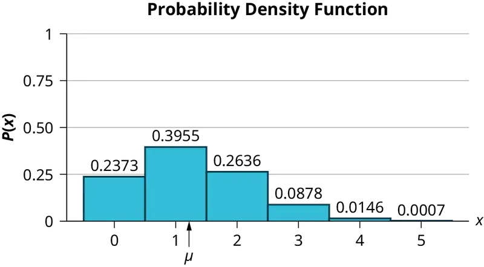
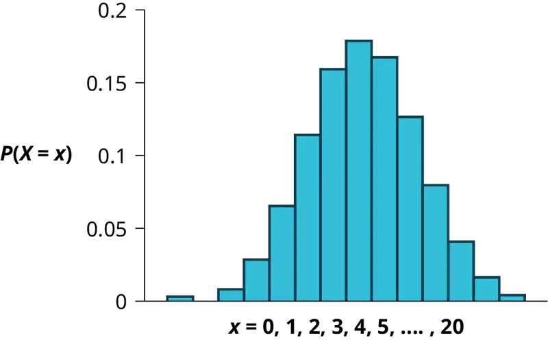
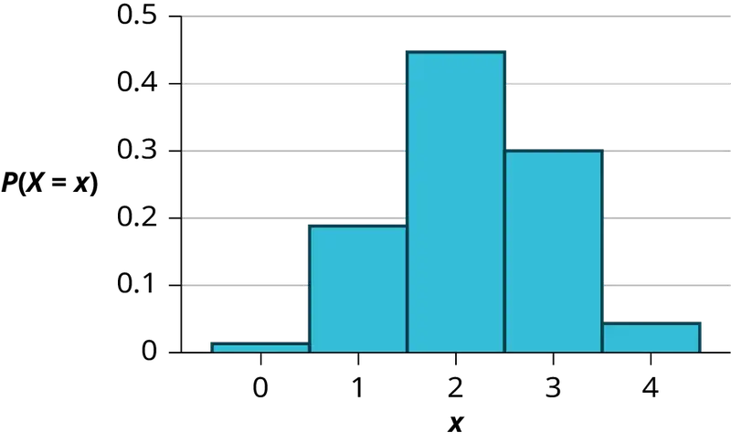
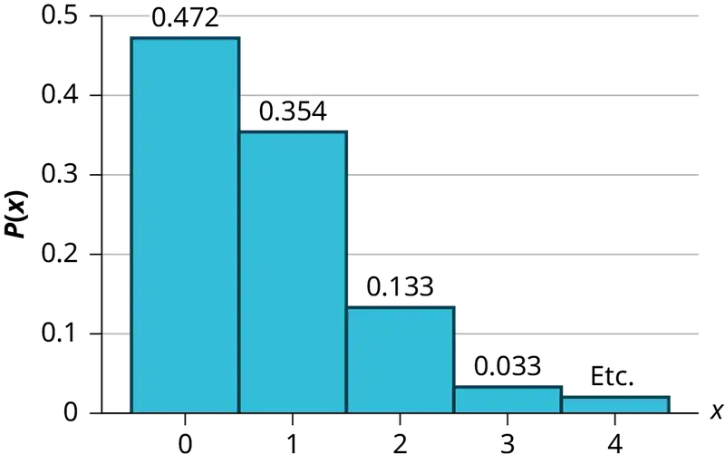
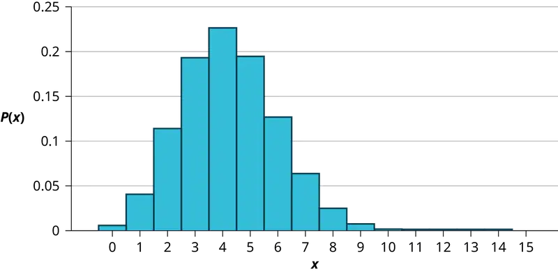

Chapter 4: Discrete Random Variables¶
Introduction¶
Chapter Outline: Chapter Objectives
By the end of this chapter, the student should be able to:
- Recognize and understand discrete probability distribution functions, in general.
- Calculate and interpret expected values.
- Recognize the binomial probability distribution and apply it appropriately.
- Recognize the Poisson probability distribution and apply it appropriately.
- Recognize the geometric probability distribution and apply it appropriately.
- Recognize the hypergeometric probability distribution and apply it appropriately.
- Classify discrete word problems by their distributions.
A student takes a ten-question, true-false quiz. Because the student had such a busy schedule, they could not study and guesses randomly at each answer. What is the probability of the student passing the test with at least a 70%?
The manager of an auto dealership might be interested in the color preferences for new car buyers. Suppose on average the dealership sells 20 cars per month. What is the probability that a customer prefers red cars?
These two examples illustrate two different types of probability problems involving discrete random variables. Recall that discrete data are data that you can count. A random variable describes the outcomes of a statistical experiment in words. The values of a random variable can vary with each repetition of an experiment.
Random Variable Notation¶
Upper case letters such as X or Y denote a random variable. Lower case letters like x or y denote the value of a random variable. If X is a random variable, then X is written in words, and x is given as a number.
For example, let X = the number of heads you get when you toss three fair coins. The sample space for the toss of three fair coins is TTT; THH; HTH; HHT; HTT; THT; TTH; HHH. Then, x = 0, 1, 2, 3. X is in words and x is a number. Notice that for this example, the x values are countable outcomes. Because you can count the possible values that X can take on and the outcomes are random (the x values 0, 1, 2, 3), X is a discrete random variable.
Collaborative Exercise
Toss a coin ten times and record the number of heads. After all members of the class have completed the experiment (tossed a coin ten times and counted the number of heads), fill in Table 4.1. Let X = the number of heads in ten tosses of the coin.
Table 4.1
| x | Frequency of x | Relative Frequency of x |
|---|---|---|
- Which value(s) of x occurred most frequently?
- If you tossed the coin 1,000 times, what values could x take on? Which value(s) of x do you think would occur most frequently?
- What does the relative frequency column sum to?
4.1 Probability Distribution Function (PDF) for a Discrete Random Variable¶
A discrete probability distribution function has two characteristics:
- Each probability is between zero and one, inclusive.
- The sum of the probabilities is one.
Example 4.1
A child psychologist is interested in the number of times a newborn baby's crying wakes its mother after midnight. For a random sample of 50 mothers, the following information was obtained. Let X = the number of times per week a newborn baby's crying wakes its mother after midnight. For this example, x = 0, 1, 2, 3, 4, 5.
P(x) = probability that X takes on a value x.
Table 4.2
| x | P(x) |
|---|---|
| 0 | P(x = 0) = \(\frac{2}{50}\) |
| 1 | P(x = 1) = \(\frac{11}{50}\) |
| 2 | P(x = 2) = \(\frac{23}{50}\) |
| 3 | P(x = 3) = \(\frac{9}{50}\) |
| 4 | P(x = 4) = \(\frac{4}{50}\) |
| 5 | P(x = 5) = \(\frac{1}{50}\) |
X takes on the values 0, 1, 2, 3, 4, 5. This is a discrete PDF because:
- Each P(x) is between zero and one, inclusive.
- The sum of the probabilities is one, that is,
Try It
A hospital researcher is interested in the number of times the average post-op patient will ring the nurse during a 12-hour shift. For a random sample of 50 patients, the following information was obtained. Let X = the number of times a patient rings the nurse during a 12-hour shift. For this exercise, x = 0, 1, 2, 3, 4, 5. P(x) = the probability that X takes on value x. Why is this a discrete probability distribution function (two reasons)?
Table 4.3
| x | P(x) |
|---|---|
| 0 | P(x = 0) = \(\frac{4}{50}\) |
| 1 | P(x = 1) = \(\frac{8}{50}\) |
| 2 | P(x = 2) = \(\frac{16}{50}\) |
| 3 | P(x = 3) = \(\frac{14}{50}\) |
| 4 | P(x = 4) = \(\frac{6}{50}\) |
| 5 | P(x = 5) = \(\frac{2}{50}\) |
Example 4.2
Suppose Nancy has classes three days a week. She attends classes three days a week 80% of the time, two days 15% of the time, one day 4% of the time, and no days 1% of the time. Suppose one week is randomly selected.
a. Let X = the number of days Nancy ____________________.
b. X takes on what values?
c. Suppose one week is randomly chosen. Construct a probability distribution table (called a PDF table) like the one in Example 4.1. The table should have two columns labeled x and P(x). What does the P(x) column sum to?
Solution
a. Let X = the number of days Nancy attends class per week.
b. 0, 1, 2, and 3
c.
Table 4.4
| x | P(x) |
|---|---|
| 0 | 0.01 |
| 1 | 0.04 |
| 2 | 0.15 |
| 3 | 0.80 |
Try It
Jeremiah has basketball practice two days a week. Ninety percent of the time, he attends both practices. Eight percent of the time, he attends one practice. Two percent of the time, he does not attend either practice. What is X and what values does it take on?
4.2 Mean or Expected Value and Standard Deviation¶
The expected value is often referred to as the "long-term" average or mean. This means that over the long term of doing an experiment over and over, you would expect this average.
You toss a coin and record the result. What is the probability that the result is heads? If you flip a coin two times, does probability tell you that these flips will result in one heads and one tail? You might toss a fair coin ten times and record nine heads. As you learned in Probability Topics, probability does not describe the short-term results of an experiment. It gives information about what can be expected in the long term. To demonstrate this, Karl Pearson once tossed a fair coin 24,000 times! He recorded the results of each toss, obtaining heads 12,012 times. In his experiment, Pearson illustrated the Law of Large Numbers.
The Law of Large Numbers states that, as the number of trials in a probability experiment increases, the difference between the theoretical probability of an event and the relative frequency approaches zero (the theoretical probability and the relative frequency get closer and closer together). When evaluating the long-term results of statistical experiments, we often want to know the “average” outcome. This “long-term average” is known as the mean or expected value of the experiment and is denoted by the Greek letter μ. In other words, after conducting many trials of an experiment, you would expect this average value.
The mean, μ, of a discrete probability function is the expected value.
The standard deviation, σ, of the PDF is the square root of the variance.
When all outcomes in the probability distribution are equally likely, these formulas coincide with the mean and standard deviation of the set of possible outcomes.
NOTE
To find the expected value or long term average, μ, simply multiply each value of the random variable by its probability and add the products.
Example 4.3
A soccer team plays soccer zero, one, or two days a week. The probability that they play zero days is 0.2, the probability that they play one day is 0.5, and the probability that they play two days is 0.3. Find the long-term average or expected value, μ, of the number of days per week the soccer team plays soccer.
To do the problem, first let the random variable X = the number of days the soccer team plays soccer per week. X takes on the values 0, 1, 2. Construct a PDF table adding a column x*P(x). In this column, you will multiply each x value by its probability.
Table 4.5 Expected Value Table This table is called an expected value table. The table helps you calculate the expected value or long-term average.
| x | P(x) | x*P(x) |
|---|---|---|
| 0 | 0.2 | (0)(0.2) = 0 |
| 1 | 0.5 | (1)(0.5) = 0.5 |
| 2 | 0.3 | (2)(0.3) = 0.6 |
Add the last column x*P(x) to find the long term average or expected value: (0)(0.2) + (1)(0.5) + (2)(0.3) = 0 + 0.5 + 0.6 = 1.1.
The expected value is 1.1. The soccer team would, on the average, expect to play soccer 1.1 days per week. The number 1.1 is the long-term average or expected value if the soccer team plays soccer week after week after week. We say μ = 1.1.
Try It
A customer orders 1, 2, or 3 bottles of water. The probability of ordering 1 bottle is 0.6, the probability of ordering 2 bottles is 0.3, and the probability of ordering 3 bottles is 0.1. Find the long-term average or expected value, μ, of the number of bottles a customer will order.
Answer
Let random variable X = the number of bottles of water a customer orders. X can take values 1, 2, 3. Construct a PDF table.
Table 4.6
| x | P(x) | \(x*P(x)\) |
|---|---|---|
| 1 | 0.6 | \((1)(0.6)=0.6\) |
| 2 | 0.3 | \((2)(0.3)=0.6\) |
| 3 | 0.1 | \((3)(0.1)=0.3\) |
The total of \(x*P(x)\) is obtained as \(0.6+0.6+0.3=1.5\). So, the long-term average or expected value is obtained as μ = 1.5.
Example 4.4
Find the expected value of the number of times a newborn baby's crying wakes its parents after midnight. The expected value is the expected number of times per week a newborn baby's crying wakes its parents after midnight. Calculate the standard deviation of the variable as well.
Table 4.7 You expect a newborn to wake its parents after midnight 2.1 times per week, on the average.
| x | P(x) | x*P(x) | (x – μ)2 ⋅ P(x) |
|---|---|---|---|
| 0 | P(x = 0) = \(\frac{2}{50}\) | (0)\(\left( \frac{2}{50} \right)\) = 0 | (0 – 2.1)2 ⋅ 0.04 = 0.1764 |
| 1 | P(x = 1) = \(\left( \frac{11}{50} \right)\) | (1)\(\left( \frac{11}{50} \right)\) = \(\frac{11}{50}\) | (1 – 2.1)2 ⋅ 0.22 = 0.2662 |
| 2 | P(x = 2) = \(\frac{23}{50}\) | (2)\(\left( \frac{23}{50} \right)\) = \(\frac{46}{50}\) | (2 – 2.1)2 ⋅ 0.46 = 0.0046 |
| 3 | P(x = 3) = \(\frac{9}{50}\) | (3)\(\left( \frac{9}{50} \right)\) = \(\frac{27}{50}\) | (3 – 2.1)2 ⋅ 0.18 = 0.1458 |
| 4 | P(x = 4) = \(\frac{4}{50}\) | (4)\(\left( \frac{4}{50} \right)\) = \(\frac{16}{50}\) | (4 – 2.1)2 ⋅ 0.08 = 0.2888 |
| 5 | P(x = 5) = \(\frac{1}{50}\) | (5)\(\left( \frac{1}{50} \right)\) = \(\frac{5}{50}\) | (5 – 2.1)2 ⋅ 0.02 = 0.1682 |
Add the values in the third column of the table to find the expected value of X:
μ = Expected Value = \(\frac{105}{50}\) = 2.1
Use μ to complete the table. The fourth column of this table will provide the values you need to calculate the standard deviation. For each value x, multiply the square of its deviation by its probability. (Each deviation has the format x – μ).
Add the values in the fourth column of the table:
0.1764 + 0.2662 + 0.0046 + 0.1458 + 0.2888 + 0.1682 = 1.05
The standard deviation of X is the square root of this sum: σ = \(\sqrt{1.05}\) ≈ 1.0247
Try It
A hospital researcher is interested in the number of times the average post-op patient will ring the nurse during a 12-hour shift. For a random sample of 50 patients, the following information was obtained. What is the expected value?
Table 4.8
| x | P(x) |
|---|---|
| 0 | P(x = 0) = \(\frac{4}{50}\) |
| 1 | P(x = 1) = \(\frac{8}{50}\) |
| 2 | P(x = 2) = \(\frac{16}{50}\) |
| 3 | P(x = 3) = \(\frac{14}{50}\) |
| 4 | P(x = 4) = \(\frac{6}{50}\) |
| 5 | P(x = 5) = \(\frac{2}{50}\) |
Example 4.5
Suppose you play a game of chance in which five numbers are chosen from 0, 1, 2, 3, 4, 5, 6, 7, 8, 9. A computer randomly selects five numbers from zero to nine with replacement. You pay $2 to play and could profit $100,000 if you match all five numbers in order (you get your $2 back plus $100,000). Over the long term, what is your expected profit of playing the game?
To do this problem, set up an expected value table for the amount of money you can profit.
Let X = the amount of money you profit. The values of x are not 0, 1, 2, 3, 4, 5, 6, 7, 8, 9. Since you are interested in your profit (or loss), the values of x are 100,000 dollars and −2 dollars.
To win, you must get all five numbers correct, in order. The probability of choosing one correct number is \(\frac{1}{10}\) because there are ten numbers. You may choose a number more than once. The probability of choosing all five numbers correctly and in order is
Therefore, the probability of winning is 0.00001 and the probability of losing is
The expected value table is as follows:
Table 4.9 Αdd the last column. –1.99998 + 1 = –0.99998
| x | P(x) | x*P(x) | |
|---|---|---|---|
| Loss | –2 | 0.99999 | (–2)(0.99999) = –1.99998 |
| Profit | 100,000 | 0.00001 | (100000)(0.00001) = 1 |
Since –0.99998 is about –1, you would, on average, expect to lose approximately $1 for each game you play. However, each time you play, you either lose $2 or profit $100,000. The $1 is the average or expected LOSS per game after playing this game over and over.
Try It
You are playing a game of chance in which four cards are drawn from a standard deck of 52 cards. You guess the suit of each card before it is drawn. The cards are replaced in the deck on each draw. You pay $1 to play. If you guess the right suit every time, you get your money back and $256. What is your expected profit of playing the game over the long term?
Example 4.6
Suppose you play a game with a biased coin. You play each game by tossing the coin once. P(heads) = \(\frac{2}{3}\) and P(tails) = \(\frac{1}{3}\). If you toss a head, you pay $6. If you toss a tail, you win $10. If you play this game many times, will you come out ahead?
a. Define a random variable X.
b. Complete the following expected value table.
Table 4.10
| x | |||
|---|---|---|---|
| WIN | 10 | \(\frac{1}{3}\) | |
| LOSE | \(\frac{-12}{3}\) |
c. What is the expected value, μ? Do you come out ahead?
Solution
a. X = amount of profit
b.
Table 4.11
| x | P(x) | xP(x) | |
|---|---|---|---|
| WIN | 10 | \(\frac{1}{3}\) | \(\frac{10}{3}\) |
| LOSE | –6 | \(\frac{2}{3}\) | \(\frac{-12}{3}\) |
c. Add the last column of the table. The expected value μ = \(\frac{-2}{3}\). You lose, on average, about 67 cents each time you play the game so you do not come out ahead.
Try It
Suppose you play a game with a spinner. You play each game by spinning the spinner once. P(red) = \(\frac{2}{5}\), P(blue) = \(\frac{2}{5}\), and P(green) = \(\frac{1}{5}\). If you land on red, you pay $10. If you land on blue, you don't pay or win anything. If you land on green, you win $10. Complete the following expected value table.
Table 4.12
| x | P(x) | ||
|---|---|---|---|
| Red | \(-\frac{20}{5}\) | ||
| Blue | \(\frac{2}{5}\) | ||
| Green | 10 |
Like data, probability distributions have standard deviations. To calculate the standard deviation (σ) of a probability distribution, find each deviation from its expected value, square it, multiply it by its probability, add the products, and take the square root. To understand how to do the calculation, look at the table for the number of days per week a men's soccer team plays soccer. To find the standard deviation, add the entries in the column labeled (x – μ)2P(x) and take the square root.
Table 4.13
| x | P(x) | x*P(x) | (x – μ)2P(x) |
|---|---|---|---|
| 0 | 0.2 | (0)(0.2) = 0 | (0 – 1.1)2(0.2) = 0.242 |
| 1 | 0.5 | (1)(0.5) = 0.5 | (1 – 1.1)2(0.5) = 0.005 |
| 2 | 0.3 | (2)(0.3) = 0.6 | (2 – 1.1)2(0.3) = 0.243 |
Add the last column in the table. 0.242 + 0.005 + 0.243 = 0.490. The standard deviation is the square root of 0.49, or σ = \(\sqrt{0.49}\) = 0.7
Generally for probability distributions, we use a calculator or a computer to calculate μ and σ to reduce roundoff error. For some probability distributions, there are short-cut formulas for calculating μ and σ.
Example 4.7
Toss a fair, six-sided die twice. Let X = the number of faces that show an even number. Construct a table like Table 4.12 and calculate the mean μ and standard deviation σ of X.
Solution
Tossing one fair six-sided die twice has the same sample space as tossing two fair six-sided dice. The sample space has 36 outcomes:
Table 4.14
| (1, 1) | (1, 2) | (1, 3) | (1, 4) | (1, 5) | (1, 6) |
| (2, 1) | (2, 2) | (2, 3) | (2, 4) | (2, 5) | (2, 6) |
| (3, 1) | (3, 2) | (3, 3) | (3, 4) | (3, 5) | (3, 6) |
| (4, 1) | (4, 2) | (4, 3) | (4, 4) | (4, 5) | (4, 6) |
| (5, 1) | (5, 2) | (5, 3) | (5, 4) | (5, 5) | (5, 6) |
| (6, 1) | (6, 2) | (6, 3) | (6, 4) | (6, 5) | (6, 6) |
Use the sample space to complete the following table:
Table 4.15 Calculating μ and σ.
| x | P(x) | xP(x) | (x – μ)2\(\cdot\)P(x) |
|---|---|---|---|
| 0 | \(\frac{9}{36}\) | 0 | (0 – 1)2 ⋅ \(\frac{9}{36}\) = \(\frac{9}{36}\) |
| 1 | \(\frac{18}{36}\) | \(\frac{18}{36}\) | (1 – 1)2 ⋅ \(\frac{18}{36}\) = 0 |
| 2 | \(\frac{9}{36}\) | \(\frac{18}{36}\) | (2 – 1)2 ⋅ \(\frac{9}{36}\) = \(\frac{9}{36}\) |
Add the values in the third column to find the expected value: μ = \(\frac{36}{36}\) = 1. Use this value to complete the fourth column.
Add the values in the fourth column and take the square root of the sum: σ = \(\sqrt{\frac{18}{36}}\) ≈ 0.7071.
Try It
Two stacks of cards are placed on a table. Each stack has cards number 1 to 8. One card from each stack is picked up. Let X = number of cards showing an odd number. Construct a table like Table 4.11 and calculate the mean µ and standard deviation σ of X.
Answer
The sample space has 64 outcomes:
Table 4.16
| (1,1) | (1,2) | (1,3) | (1,4) | (1,5) | (1,6) | (1,7) | (1,8) |
| (2,1) | (2,2) | (2,3) | (2,4) | (2,5) | (2,6) | (2,7) | (2,8) |
| (3,1) | (3,2) | (3,3) | (3,4) | (3,5) | (3,6) | (3,7) | (3,8) |
| (4,1) | (4,2) | (4,3) | (4,4) | (4,5) | (4,6) | (4,7) | (4,8) |
| (5,1) | (5,2) | (5,3) | (5,4) | (5,5) | (5,6) | (5,7) | (5,8) |
| (6,1) | (6,2) | (6,3) | (6,4) | (6,5) | (6,6) | (6,7) | (6,8) |
| (7,1) | (7,2) | (7,3) | (7,4) | (7,5) | (7,6) | (7,7) | (7,8) |
| (8,1) | (8,2) | (8,3) | (8,4) | (8,5) | (8,6) | (8,7) | (8,8) |
The sample space is used to complete the following table:
Table 4.17
| x | P(x) | x*P(x) | \({\left( x-\mu \right)}^{2}\cdot P\left( x \right)\) |
|---|---|---|---|
| 0 | \(\frac{16}{64}\) | 0 | \({(0-1)}^{2}\cdot\frac{16}{64}=\frac{16}{64}\) |
| 1 | \(\frac{32}{64}\) | \(\frac{32}{64}\) | \({(1-1)}^{2}\cdot\frac{32}{64}=0\) |
| 2 | \(\frac{16}{64}\) | \(\frac{32}{64}\) | \({(2-1)}^{2}\cdot\frac{16}{64}=\frac{16}{64}\) |
The mean is calculated by adding the values in the third column of P(x), so \(\frac{64}{64}=1\).
The square root of the sum of values obtained in the fourth column will give the standard deviation, \(\sigma=\sqrt{\frac{32}{64}}=0.7071\).
Example 4.8
On May 11, 2013 at 9:30 PM, the probability that moderate seismic activity (one moderate earthquake) would occur in the next 48 hours in Iran was about 21.42%. Suppose you make a bet that a moderate earthquake will occur in Iran during this period. If you win the bet, you win $50. If you lose the bet, you pay $20. Let X = the amount of profit from a bet.
P(win) = P(one moderate earthquake will occur) = 21.42%
P(loss) = P(one moderate earthquake will not occur) = 100% – 21.42%
If you bet many times, will you come out ahead? Explain your answer in a complete sentence using numbers. What is the standard deviation of X? Construct a table similar to Table 4.13 and Table 4.14 to help you answer these questions.
Solution
Table 4.18
| x | P(x) | x(Px) | (x – μ)2P(x) | |
|---|---|---|---|---|
| win | 50 | 0.2142 | 10.71 | [50 – (–5.006)]2(0.2142) = 648.0964 |
| loss | –20 | 0.7858 | –15.716 | [–20 – (–5.006)]2(0.7858) = 176.6636 |
Mean = Expected Value = 10.71 + (–15.716) = –5.006.
If you make this bet many times under the same conditions, your long term outcome will be an average loss of $5.01 per bet.
\(\text{Standard Deviation =}\ \sqrt{648.0964+176.6636}\approx 28.7186\)
Try It
On May 11, 2013 at 9:30 PM, the probability that moderate seismic activity (one moderate earthquake) would occur in the next 48 hours in Japan was about 1.08%. As in Example 4.8, you bet that a moderate earthquake will occur in Japan during this period. If you win the bet, you win $100. If you lose the bet, you pay $10. Let X = the amount of profit from a bet. Find the mean and standard deviation of X.
Some of the more common discrete probability functions are binomial, geometric, hypergeometric, and Poisson. Most elementary courses do not cover the geometric, hypergeometric, and Poisson. Your instructor will let you know if they wish to cover these distributions.
A probability distribution function is a pattern. You try to fit a probability problem into a pattern or distribution in order to perform the necessary calculations. These distributions are tools to make solving probability problems easier. Each distribution has its own special characteristics. Learning the characteristics enables you to distinguish among the different distributions.
4.3 Binomial Distribution¶
There are three characteristics of a binomial experiment.
- There are a fixed number of trials. Think of trials as repetitions of an experiment. The letter n denotes the number of trials.
- There are only two possible outcomes, called "success" and "failure," for each trial. The letter p denotes the probability of a success on one trial, and q denotes the probability of a failure on one trial. p + q = 1.
- The n trials are independent and are repeated using identical conditions. Because the n trials are independent, the outcome of one trial does not help in predicting the outcome of another trial. Another way of saying this is that for each individual trial, the probability, p, of a success and probability, q, of a failure remain the same. For example, randomly guessing at a true-false statistics question has only two outcomes. If a success is guessing correctly, then a failure is guessing incorrectly. Suppose Joe always guesses correctly on any statistics true-false question with probability p = 0.6. Then, q = 0.4. This means that for every true-false statistics question Joe answers, his probability of success (p = 0.6) and his probability of failure (q = 0.4) remain the same.
The outcomes of a binomial experiment fit a binomial probability distribution. The random variable X = the number of successes obtained in the n independent trials.
The mean, μ, and variance, σ2, for the binomial probability distribution are μ = np and σ2 = npq. The standard deviation, σ, is then σ = \(\sqrt{npq}\).
Any experiment that has characteristics two and three and where n = 1 is called a Bernoulli Trial (named after Jacob Bernoulli who, in the late 1600s, studied them extensively). A binomial experiment takes place when the number of successes is counted in one or more Bernoulli Trials.
Example 4.9
At ABC College, the withdrawal rate from an elementary physics course is 30% for any given term. This implies that, for any given term, 70% of the students stay in the class for the entire term. A "success" could be defined as an individual who withdrew. The random variable X = the number of students who withdraw from the randomly selected elementary physics class.
Try It
The state health board is concerned about the amount of fruit available in school lunches. Forty-eight percent of schools in the state offer fruit in their lunches every day. This implies that 52% do not. What would a "success" be in this case?
Example 4.10
Suppose you play a game that you can only either win or lose. The probability that you win any game is 55%, and the probability that you lose is 45%. Each game you play is independent. If you play the game 20 times, write the function that describes the probability that you win 15 of the 20 times. Here, if you define X as the number of wins, then X takes on the values 0, 1, 2, 3, ..., 20. The probability of a success is p = 0.55. The probability of a failure is q = 0.45. The number of trials is n = 20. The probability question can be stated mathematically as P(x = 15).
Try It
A trainer is teaching a rescued dolphin to catch live fish before returning it to the wild. The probability that the dolphin successfully catches a fish is 35%, and the probability that the dolphin does not successfully catch the fish is 65%. Out of 20 attempts, you want to find the probability that the dolphin succeeds 12 times. State the probability question mathematically.
Example 4.11
A coin has been altered to weight the outcome from 0.5 to 0.25 and flipped 5 times. Each flip is independent. What is the probability of getting more than 3 heads? Let X = the number of heads in 5 flips of the fair coin. X takes on the values 0, 1, 2, 3, 4, 5. Since the coin is altered to result in p = 0.25, q is 0.75. The number of trials is n = 5. State the probability question mathematically.
First develop fully the probability density function and graph the probability density function. With the fully developed probability density function we can simply read the solution to the question \(P\left( x \gt 3 \right)\) heads. \(P\left( x \gt 3 \right)=P\left( x=4 \right)+P\left( x=5 \right)=0.0146+0.0007=0.0153.\) We have added the two individual probabilities because of the addition rule from Probability Topics.
Figure 4.2 also allows us to see the link between the probability density function and probability and area. We also see in Figure 4.2 the skew of the binomial distribution when p is not equal to 0.5. In Figure 4.2 the distribution is skewed right as a result of \(\mu=np=1.25\) because \(p=0.25\).

Try It
A fair, six-sided die is rolled ten times. Each roll is independent. You want to find the probability of rolling a one more than three times. State the probability question mathematically.
Example 4.12
Approximately 70% of statistics students do their homework in time for it to be collected and graded. Each student does homework independently. In a statistics class of 50 students, what is the probability that at least 40 will do their homework on time? Students are selected randomly.
a. This is a binomial problem because there is only a success or a __________, there are a fixed number of trials, and the probability of a success is 0.70 for each trial.
b. If we are interested in the number of students who do their homework on time, then how do we define X?
c. What values does x take on?
d. What is a "failure," in words?
e. If p + q = 1, then what is q?
f. The words "at least" translate as what kind of inequality for the probability question P(x ____ 40).
Solution
a. failure
b. X = the number of statistics students who do their homework on time
c. 0, 1, 2, …, 50
d. Failure is defined as a student who does not complete their homework on time.
The probability of a success is p = 0.70. The number of trials is n = 50.
e. q = 0.30
f. greater than or equal to (≥)
The probability question is P(x ≥ 40).
Try It
Sixty-five percent of people pass the state driver’s exam on the first try. A group of 50 individuals who have taken the driver’s exam is randomly selected. Give two reasons why this is a binomial problem.
Notation for the Binomial: B = Binomial Probability Distribution Function¶
X ~ B(n, p)
Read this as "X is a random variable with a binomial distribution." The parameters are n and p; n = number of trials, p = probability of a success on each trial.
Example 4.13
It has been stated that about 41% of adult workers have a high school diploma but do not pursue any further education. If 20 adult workers are randomly selected, find the probability that at most 12 of them have a high school diploma but do not pursue any further education. How many adult workers do you expect to have a high school diploma but do not pursue any further education?
Let X = the number of workers who have a high school diploma but do not pursue any further education.
X takes on the values 0, 1, 2, ..., 20 where n = 20, p = 0.41, and q = 1 – 0.41 = 0.59. X ~ B(20, 0.41)
Find P(x ≤ 12). P(x ≤ 12) = 0.9738. (calculator or computer)
Using the Calculator
Go into 2nd DISTR. The syntax for the instructions are as follows:
To calculate (x = value): binompdf(n, p, number) if "number" is left out, the result is the binomial probability table.
To calculate P(x ≤ value): binomcdf(n, p, number) if "number" is left out, the result is the cumulative binomial probability table.
For this problem: After you are in 2nd DISTR, arrow down to binomcdf. Press ENTER. Enter 20,0.41,12). The result is P(x ≤ 12) = 0.9738.
NOTE
If you want to find P(x = 12), use the pdf (binompdf). If you want to find P(x > 12), use 1 - binomcdf(20,0.41,12).
The probability that at most 12 workers have a high school diploma but do not pursue any further education is 0.9738.
The graph of X ~ B(20, 0.41) is as follows:

The y-axis contains the probability of x, where X = the number of workers who have only a high school diploma.
The number of adult workers that you expect to have a high school diploma but not pursue any further education is the mean, μ = np = (20)(0.41) = 8.2.
The formula for the variance is σ2 = npq. The standard deviation is σ = \(\sqrt{npq}\).
σ = \(\sqrt{(20)(0.41)(0.59)}\) = 2.20.
Try It
About 32% of students participate in a community volunteer program outside of school. If 30 students are selected at random, find the probability that at most 14 of them participate in a community volunteer program outside of school. Use the TI-83+ or TI-84 calculator to find the answer.
Example 4.14
In the 2013 Jerry’s Artarama art supplies catalog, there are 560 pages. Eight of the pages feature signature artists. Suppose we randomly sample 100 pages. Let X = the number of pages that feature signature artists.
a. What values does x take on?
b. What is the probability distribution? Find the following probabilities:
i. the probability that two pages feature signature artists
ii. the probability that at most six pages feature signature artists
iii. the probability that more than three pages feature signature artists.
c. Using the formulas, calculate the (i) mean and (ii) standard deviation.
Solution
a. x = 0, 1, 2, 3, 4, 5, 6, 7, 8
b. X ~ B\(\left( 100,\frac{8}{560} \right)\)
i. P(x = 2) = binompdf\(\left( 100,\frac{8}{560},2 \right)\) = 0.2466
ii. P(x ≤ 6) = binomcdf\(\left( 100,\frac{8}{560},6 \right)\) = 0.9994
iii. P(x > 3) = 1 – P(x ≤ 3) = 1 – binomcdf\(\left( 100,\frac{8}{560},3 \right)\) = 1 – 0.9443 = 0.0557
c. i. Mean = np = (100)\(\left( \frac{8}{560} \right)\) = \(\frac{800}{560}\) ≈ 1.4286
ii. Standard Deviation = \(\sqrt{npq}\) = \(\sqrt{(100)\left( \frac{8}{560} \right)\left( \frac{552}{560} \right)}\) ≈ 1.1867
Try It
According to a Gallup poll, 60% of American adults prefer saving over spending. Let X = the number of American adults out of a random sample of 50 who prefer saving to spending.
a. What is the probability distribution for X?
b. Use your calculator to find the following probabilities:
i. the probability that 25 adults in the sample prefer saving over spending
ii. the probability that at most 20 adults prefer saving
iii. the probability that more than 30 adults prefer saving
c. Using the formulas, calculate the (i) mean and (ii) standard deviation of X.
Example 4.15
The lifetime risk of developing cancer is about one in 67 (1.5%). Suppose we randomly sample 200 people. Let X = the number of people who will develop cancer.
- What is the probability distribution for X?
- Using the formulas, calculate the (i) mean and (ii) standard deviation of X.
- Use your calculator to find the probability that at most eight people develop cancer
- Is it more likely that five or six people will develop cancer? Justify your answer numerically.
Solution
- \(X\sim B\left( 200,0.015 \right)\)
- \(\mathrm{Mean}=np=200\left( 0.015 \right)=3\)
\(\mathrm{Standard}\mathrm{Deviation}=\sqrt{npq}=\sqrt{200(0.015)(0.985)}=1.719\) - \(P\left( x\le 8 \right)=0.9965\)
- The probability that five people develop cancer is 0.1011. The probability that six people develop cancer is 0.0500.
Try It
During a certain NBA season, a player for the Los Angeles Clippers had the highest field goal completion rate in the league. This player scored with 61.3% of his shots. Suppose you choose a random sample of 80 shots made by this player during the season. Let X = the number of shots that scored points.
- What is the probability distribution for X?
- Using the formulas, calculate the (i) mean and (ii) standard deviation of X.
- Use your calculator to find the probability that this player scored with 60 of these shots.
- Find the probability that this player scored with more than 50 of these shots.
Example 4.16
The following example illustrates a problem that is not binomial. It violates the condition of independence. ABC College has a student advisory committee made up of ten staff members and six students. The committee wishes to choose a chairperson and a recorder. What is the probability that the chairperson and recorder are both students? The names of all committee members are put into a box, and two names are drawn without replacement. The first name drawn determines the chairperson and the second name the recorder. There are two trials. However, the trials are not independent because the outcome of the first trial affects the outcome of the second trial. The probability of a student on the first draw is \(\frac{6}{16}\). The probability of a student on the second draw is \(\frac{5}{15}\), when the first draw selects a student. The probability is \(\frac{6}{15}\), when the first draw selects a staff member. The probability of drawing a student's name changes for each of the trials and, therefore, violates the condition of independence.
Try It
A lacrosse team is selecting a captain. The names of all the seniors are put into a hat, and the first three that are drawn will be the captains. The names are not replaced once they are drawn (one person cannot be two captains). You want to see if the captains all play the same position. State whether this is binomial or not and state why.
4.4 Geometric Distribution¶
There are four main characteristics of a geometric experiment.
- A trial is repeated until a success occurs. Think of this as one or more Bernoulli trials with all failures except the last one, which is a success. In other words, you keep repeating what you are doing until the first success. Then you stop. For example, you throw a dart at a bullseye until you hit the bullseye. The first time you hit the bullseye is a "success," so you stop throwing the dart. It might take six tries until you hit the bullseye. You can think of the trials as failure, failure, failure, failure, failure, success, STOP. In theory, the number of trials could go on forever.
- The repeated trials are independent of each other.
- The probability, p, of a success and the probability, q, of a failure is the same for each trial. \(p+q=1\) and \(q=1-p.\) For example, the probability of rolling a three when you throw one fair die is \(1/6\). This is true no matter how many times you roll the die. Suppose you want to know the probability of getting the first three on the fifth roll. On rolls one through four, you do not get a face with a three. The probability for each of the rolls is \(q=5/6,\) the probability of a failure. The probability of getting a first three on the fifth roll is \((5/6)(5/6)(5/6)(5/6)(1/6)=0.0804\)
- The random variable X represents the number of the trial in which the first success occurs. That is, X = the number of independent trials until the first success.
The following are additional attributes of the geometric distribution:
- The random variable is discrete. The random variable may be defined in two ways depending upon the analyst’s interest. In the example above for throwing a die, the question was “What is the probability that the first success will be on the fifth throw?” Alternatively, the question could be asked as “What is the probability that it takes four failures before a success?” We will see that each way of asking the question will alter the form of the geometric probability density function slightly and will change the mean and standard deviation of the geometric pdf.
- Implicit in the random variable is that the probability of a success is constant and therefore so is the probability of a failure. For flipping a coin this is obvious, but in experiments that require skill, such as hitting a baseball or throwing a dart, one might consider that learning during the experiment would alter the probability of a success. The geometric distribution cannot capture “learning” thus the historical probability of success is assumed to be constant.
- The geometric distribution is “memoryless.” There are very few probability density functions that are what is known as “memoryless,” and the Geometric distribution is the only one with a discrete random variable that is memoryless. As an example, historically Major League Baseball player Jones has a record of hitting the ball for at least an advance to first base with a probability of 0.20. Jones has not had a hit in his last 10 times at bat. What is the probability that Jones will get a hit in his third time at bat? The answer ignores his 10 previous failures. All events prior to the events in current time are irrelevant and thus are considered “memoryless.”
Formally: \(P\left( x=n+k|x\ge k+1 \right)=P(x=n),\) where k = number of previous failures
Jones’s probability of a hit begins anew each time he comes to bat. This feature of the geometric distribution results in a curious result: Drawing parts from a manufacturing process to test for parts that are defective, the geometric distribution begins with a clean slate each time the tests begin with no consideration of previous test results. More on this when we get to the exponential probability density function.
Example 4.17
You play a game of chance that you can either win or lose (there are no other possibilities) until you lose. Your probability of losing is p = 0.57. What is the probability that it takes five games until you lose? Let X = the number of games you play until you lose (includes the losing game). Then X takes on the values 1, 2, 3, ... (could go on indefinitely). The probability question is P(x = 5).
Try It
You throw darts at a board until you hit the center area. Your probability of hitting the center area is p = 0.17. You want to find the probability that it takes eight throws until you hit the center. What values does X take on?
Example 4.18
A safety engineer feels that 35% of all industrial accidents in the plant are caused by failure of employees to follow instructions. They decide to look at the accident reports (selected randomly and replaced in the pile after reading) until they find one that shows an accident caused by failure of employees to follow instructions. On average, how many reports would the safety engineer expect to look at until they find a report showing an accident caused by employee failure to follow instructions? What is the probability that the safety engineer will have to examine at least three reports until they find a report showing an accident caused by employee failure to follow instructions?
Let X = the number of accidents the safety engineer must examine until they find a report showing an accident caused by employee failure to follow instructions. X takes on the values 1, 2, 3, .... The first question asks you to find the expected value or the mean. The second question asks you to find P(x ≥ 3). ("At least" translates to a "greater than or equal to" symbol).
Solution
- On average, how many reports would the safety engineer expect to review until they find a report showing an accident caused by something other than failure to follow instructions? This question asks you to find the expected value or the mean. This is the average number of failures from something other than following instructions. The formula for the mean of this geometric distribution is:
\(\mu=E\left( x \right)=\frac{1}{p}\approx 2.8\)
Note that the mean does not need to be a whole number although the random variable is discrete and must be a counting number - What is the probability that the safety engineer will have to examine at least three reports until they find a report showing an accident caused by employee failure to follow instructions?
This question is answered by first defining the random variable. Let X = the number of accidents the safety engineer must examine until they find a report showing an accident caused by employee failure to follow instructions. X can take on the values 1, 2, 3, 4, … ∞. Unlike the binomial distribution with a fixed number of trials, the geometric distribution may have an infinite number of failed trials before a success occurs.
This second question asks you to find \(P(x\ge 3)\). ("At least" translates to a "greater than or equal to" symbol.)
In a binomial distribution, we saw the solution to questions of “more than” or “less than” would be to calculate each probability individually and add from zero to three. If the probability of interest is “greater than or equal to” (≥) the individual probabilities are added from zero to three and then subtracted from one.
\(P\left( x\ge 3 \right)=1-P(x \lt 3)\)
Because we cannot add the full range of the geometric distribution random variable because it goes through infinity, an alternative solution is developed. An alternative geometric distribution pair of formulas provides solutions for questions asking for probabilities “more than” and “less than.”
If the question is:
What is the probability it takes MORE THAN n events to get first success?
\(P\left( x \gt n \right)={(1-p)}^{n}\)
What is the probability it takes LESS THAN n event for success?
\(P\left( x \lt n \right)={1-(1-p)}^{n}\)
Try It
An instructor feels that 15% of students get below a C on their final exam. They decide to look at final exams (selected randomly and replaced in the pile after reading) until they find one that shows a grade below a C. We want to know the probability that the instructor will have to examine at least ten exams until they find one with a grade below a C. What is the probability question stated mathematically?
Example 4.19
Suppose that you are looking for a student at your college who lives within five miles of you. You know that 55% of the 25,000 students do live within five miles of you. You randomly contact students from the college until one says they live within five miles of you. What is the probability that you need to contact four people?
This is a geometric problem because you may have a number of failures before you have the one success you desire. Also, the probability of a success stays the same each time you ask a student if they live within five miles of you. There is no definite number of trials (number of times you ask a student).
a. Let X = the number of ____________ you must ask ____________ one says yes.
b. What values does X take on?
c. What are p and q?
d. The probability question is P(_______).
Solution
a. Let X = the number of students you must ask until one says yes.
b. 1, 2, 3, …, (total number of students)
c. p = 0.55; q = 0.45
d. P(x = 4)
Try It
You need to find a store that carries a special printer ink. You know that of the stores that carry printer ink, 10% of them carry the special ink. You randomly call each store until one has the ink you need. What are p and q?
Notation for the Geometric: G = Geometric Probability Distribution Function¶
X ~ G(p)
Read this as "X is a random variable with a geometric distribution." The parameter is p; p = the probability of a success for each trial.
CASE I: Random Variable X Is Event of First Success
In this case we ask, “What is the probability that we will have some number x of events of interest to us of failures before a success?”
The geometric pdf tells us the probability that the first occurrence of success requires x number of failure independent trials, each with probability \((1-p)\). If the probability of success on each trial is p, then the probability that the xth trial (out of x trials) is the first success is:
\(P\left( X=x \right)={(1-p)}^{x-1}p\)
for \(x=1,2,3,....\)
Like the binomial distribution, the geometric distribution has the parameters of the mean and standard deviation. The expected value of X, the mean for Case I, is \(\mu=\frac{1}{p}.\) This tells us how many failed trials to expect until we get the first success. This count includes in the count of trials the trial that results in success. The above form of the geometric distribution is used for modeling the number of trials until the first success. The number of trials includes the one that is a success: x = all trials including the one that is a success. This can be seen in the form of the formula. If X = number of trials including the success, then we must multiply the probability of failure, \((1-p)\), times the number of failures, that is \(x-1\). The standard deviation of Case I of the geometric distribution is:
CASE II: Random Variable X Is Number of Failures BEFORE a Success
By contrast to Case I, the following form of the geometric distribution used for modeling number of failures until the first success is:
\(P\left( X=x \right)={(1-p)}^{x}p\)
for \(x=0,1,2,3,....\)
In this case the trial that is the success is not counted as a trial in the formula: x = number of failures. The expected value, the mean, of this distribution is \(\mu=\frac{1-p}{p}\). This tells us how many failures to expect before we have a success. In either case, the sequence of probabilities is a geometric sequence. In Case II, the standard deviation parameter is: \(\sigma=\sqrt{\left( \frac{1-p}{p} \right)}.\)
The y-axis in Figure 4.4 contains the probability of x, and the x-axis is the random number components tested. For example, at \(x=1\) the probability it will be found to be defective is 0.0196. With two components tested, the probability the second component is defective is graphed at a probability of 0.0196 at \(x=2\) on the x axis. For the probability that the third component is defective we find \(P\left( X=3 \right)=0.019208.\) (The first two are the same because of rounding in the computations.)
Notice on Figure 4.4 that the probabilities decline by the same step down with each change in the value of x. This increment is called the common ratio. This exists for the geometric probability distribution uniquely. The common ratio, called r, can be calculated by dividing any value by the previous value, e.g., \(\frac{P(x=5)}{P(x=4)}=\frac{0.018447}{0.018823}=0.98.\)
For this set of data, therefore, the common ratio is 0.98. The common ratio then multiplied by any other probability value will provide the next probability value in the sequence. For example, the probability that the sixth component tested is a failure is 0.018078. Check this using the formula from Case I. Now we have the \(P\left( x=6 \right)\). Knowing this and the common ratio we can calculate the \(P\left( x=7 \right)\) by simple multiplication: \(P\left( x=7 \right)=\left( 0.018078 \right)*0.98=0.017716,\), the same value we found earlier by using the geometric probability distribution. This common ratio increment is the same ratio between every number and is called a geometric progression and thus the name for this probability density function. Once the common ratio is calculated, any \(P\left( x=x_{a} \right)\) one desires to know can be easily found.
The number of components that you would expect to test until you find the first defective component is the mean, \(\mu=50\) for this case of defective components. The formula for the mean of the geometric distribution for the random variable defined as number of failures before first success is \(\mu=\frac{1}{p}=\frac{1}{0.02}=50\)
See Example 4.20 for an example where the geometric random variable is defined as number of trials until first success. The expected value of this formula for the geometric distribution will be different from this version of the distribution. Case II also has a variance, but this is changed from the Case I formula. This formula for the variance is:
\(P\left( X=x \right)={(1-p)}^{x-1}p\)
for \(x=1,2,3,....\)
Example 4.20
Assume that the probability of a defective computer component is 0.02. Components are randomly selected. Find the probability that the first defect is caused by the seventh component tested. How many components do you expect to test until one is found to be defective?
Let X = the number of computer components tested until the first defect is found.
X takes on the values 1, 2, 3, ... where p = 0.02.
Find P(x = 7). P(x = 7) = 0.0177.
Using the Calculator
To find the probability that x = 7,
- Enter
2nd, DISTR - Scroll down and select
geometpdf( - Press
ENTER - Enter 0.02, 7); press
ENTERto see the result: P(x = 7) = 0.0177
To find the probability that x ≤ 7, follow the same instructions EXCEPT select E:geometcdf(as the distribution function.
The probability that the seventh component is the first defect is 0.0177.
The formula for the variance is σ2 = \(\left( \frac{1}{p} \right)\left( \frac{1}{p}-1 \right)\) = \(\left( \frac{1}{0.02} \right)\left( \frac{1}{0.02}-1 \right)\) = 2,450
The standard deviation is σ = \(\sqrt{\left( \frac{1}{p} \right)\left( \frac{1}{p}-1 \right)}\) = \(\sqrt{\left( \frac{1}{0.02} \right)\left( \frac{1}{0.02}-1 \right)}\) = 49.5
Try It
The probability of a defective steel rod is 0.01. Steel rods are selected at random. Find the probability that the first defect occurs on the ninth steel rod. Use the TI-83+ or TI-84 calculator to find the answer.
Example 4.21
The lifetime risk of developing cancer is about one in 67 (1.5%). Let X = the number of people you ask until one says they have cancer. Then X is a discrete random variable with a geometric distribution: \(X\sim G\left( \frac{1}{67} \right)\) or \(X\sim G(0.015)\)
- What is the probability of that you ask ten people before one says they have cancer?
- What is the probability that you must ask 20 people?
- Find the (i) mean and (ii) standard deviation of X.
Solution
- \(P(x=10)=geometricpdf(0.015,10)=0.0131\)
- \(P(x=20)=geometricpdf(0.015,20)=0.0113\)
- \(\mathrm{Mean}=\mu=\frac{1}{p}=\frac{1}{0.015}=66.67\)
\(\mathrm{Standard}\mathrm{Deviation}=\sigma=\sqrt{\frac{1-p}{p^{2}}}=\sqrt{\frac{1-0.015}{{[0.015]}^{2}}}=66.16\)
Try It
The literacy rate for a nation measures the proportion of people age 15 and over who can read and write. The literacy rate for women in Afghanistan is 12%. Let X = the number of Afghani women you ask until one says that she is literate.
- What is the probability distribution of X?
- What is the probability that you ask five women before one says she is literate?
- What is the probability that you must ask ten women?
- Find the (i) mean and (ii) standard deviation of X.
4.5 Hypergeometric Distribution¶
There are five characteristics of a hypergeometric experiment.
- You take samples from two groups.
- You are concerned with a group of interest, called the first group.
- You sample without replacement from the combined groups. For example, you want to choose a softball team from a combined group of 11 men and 13 women. The team consists of ten players.
- Each pick is not independent, since sampling is without replacement. In the softball example, the probability of picking a woman first is \(\frac{13}{24}\). The probability of picking a man second is \(\frac{11}{23}\) if a woman was picked first. It is \(\frac{10}{23}\) if a man was picked first. The probability of the second pick depends on what happened in the first pick.
- You are not dealing with Bernoulli Trials.
The outcomes of a hypergeometric experiment fit a hypergeometric probability distribution. The random variable X = the number of items from the group of interest.
Example 4.22
A candy dish contains 100 jelly beans and 80 gumdrops. Fifty candies are picked at random. What is the probability that 35 of the 50 are gumdrops? The two groups are jelly beans and gumdrops. Since the probability question asks for the probability of picking gumdrops, the group of interest (first group) is gumdrops. The size of the group of interest (first group) is 80. The size of the second group is 100. The size of the sample is 50 (jelly beans or gumdrops). Let X = the number of gumdrops in the sample of 50. X takes on the values x = 0, 1, 2, ..., 50. What is the probability statement written mathematically?
Solution
P(x = 35)
Try It
A bag contains letter tiles. Forty-four of the tiles are vowels, and 56 are consonants. Seven tiles are picked at random. You want to know the probability that four of the seven tiles are vowels. What is the group of interest, the size of the group of interest, and the size of the sample?
Example 4.23
Suppose a shipment of 100 laptops is known to have ten defective laptops. An inspector randomly chooses 12 for inspection. He is interested in determining the probability that, among the 12 laptops, at most two are defective. The two groups are the 90 non-defective laptops and the 10 defective laptops. The group of interest (first group) is the defective group because the probability question asks for the probability of at most two defective laptops. The size of the sample is 12 laptops. (They may be non-defective or defective.) Let X = the number of defective laptops in the sample of 12. X takes on the values 0, 1, 2, ..., 10. X may not take on the values 11 or 12. The sample size is 12, but there are only 10 defective laptops. Write the probability statement mathematically.
Solution
P(x ≤ 2)
Try It
A gross of eggs contains 144 eggs. A particular gross is known to have 12 cracked eggs. An inspector randomly chooses 15 for inspection. She wants to know the probability that, among the 15, at most three are cracked. What is X, and what values does it take on?
Example 4.24
You are president of an on-campus special events organization. You need a committee of seven students to plan a special birthday party for the president of the college. Your organization consists of 18 women and 15 men. You are interested in the number of men on your committee. If the members of the committee are randomly selected, what is the probability that your committee has more than four men?
This is a hypergeometric problem because you are choosing your committee from two groups (men and women).
a. Are you choosing with or without replacement?
b. What is the group of interest?
c. How many are in the group of interest?
d. How many are in the other group?
e. Let X = _________ on the committee. What values does X take on?
f. The probability question is P(_______).
Solution
a. without
b. the men
c. 15 men
d. 18 women
e. Let X = the number of men on the committee. x = 0, 1, 2, …, 7.
f. P(x > 4)
Try It
A palette has 200 milk cartons. Of the 200 cartons, it is known that ten of them have leaked and cannot be sold. A stock clerk randomly chooses 18 for inspection. He wants to know the probability that among the 18, no more than two are leaking. Give five reasons why this is a hypergeometric problem.
Notation for the Hypergeometric: H = Hypergeometric Probability Distribution Function¶
X ~ H(r, b, n)
Read this as "X is a random variable with a hypergeometric distribution." The parameters are r, b, and n; r = the size of the group of interest (first group), b = the size of the second group, n = the size of the chosen sample.
Example 4.25
A school site committee is to be chosen randomly from six men and five women. If the committee consists of four members chosen randomly, what is the probability that two of them are men? How many men do you expect to be on the committee?
Let X = the number of men on the committee of four. The men are the group of interest (first group).
X takes on the values 0, 1, 2, 3, 4, where r = 6, b = 5, and n = 4. X ~ H(6, 5, 4)
Find P(x = 2). P(x = 2) = 0.4545 (calculator or computer)
NOTE
Currently, the TI-83+ and TI-84 do not have hypergeometric probability functions. There are a number of computer packages, including Microsoft Excel, that do.
The probability that there are two men on the committee is about 0.45.
The graph of X ~ H(6, 5, 4) is:

The y-axis contains the probability of X, where X = the number of men on the committee.
You would expect m = 2.18 (about two) men on the committee.
The formula for the mean is \(\mu=\frac{nr}{r+b}=\frac{(4)(6)}{6+5}=2.18\)
Try It
An intramural basketball team is to be chosen randomly from 15 boys and 12 girls. The team has ten slots. You want to know the probability that eight of the players will be boys. What is the group of interest and the sample?
4.6 Poisson Distribution¶
There are two main characteristics of a Poisson experiment.
- The Poisson probability distribution gives the probability of a number of events occurring in a fixed interval of time or space if these events happen with a known average rate and independently of the time since the last event. For example, a book editor might be interested in the number of words spelled incorrectly in a particular book. It might be that, on the average, there are five words spelled incorrectly in 100 pages. The interval is the 100 pages.
- The Poisson distribution may be used to approximate the binomial if the probability of success is "small" (such as 0.01) and the number of trials is "large" (such as 1,000). You will verify the relationship in the homework exercises. n is the number of trials, and p is the probability of a "success."
The random variable X = the number of occurrences in the interval of interest.
Example 4.26
The average number of loaves of bread put on a shelf in a bakery in a half-hour period is 12. Of interest is the number of loaves of bread put on the shelf in five minutes. The time interval of interest is five minutes. What is the probability that the number of loaves, selected randomly, put on the shelf in five minutes is three?
Let X = the number of loaves of bread put on the shelf in five minutes. If the average number of loaves put on the shelf in 30 minutes (half-hour) is 12, then the average number of loaves put on the shelf in five minutes is \(\left( \frac{5}{30} \right)\)(12) = 2 loaves of bread.
The probability question asks you to find P(x = 3).
Try It
The average number of fish caught in an hour is eight. Of interest is the number of fish caught in 15 minutes. The time interval of interest is 15 minutes. What is the average number of fish caught in 15 minutes?
Example 4.27
A bank expects to receive six bad checks per day, on average. What is the probability of the bank getting fewer than five bad checks on any given day? Of interest is the number of checks the bank receives in one day, so the time interval of interest is one day. Let X = the number of bad checks the bank receives in one day. If the bank expects to receive six bad checks per day then the average is six checks per day. Write a mathematical statement for the probability question.
Solution
P(x < 5)
Try It
An electronics store expects to have ten returns per day on average. The manager wants to know the probability of the store getting fewer than eight returns on any given day. State the probability question mathematically.
Example 4.28
You notice that a news reporter says "uh," on average, two times per broadcast. What is the probability that the news reporter says "uh" more than two times per broadcast.
This is a Poisson problem because you are interested in knowing the number of times the news reporter says "uh" during a broadcast.
a. What is the interval of interest?
b. What is the average number of times the news reporter says "uh" during one broadcast?
c. Let X = ____________. What values does X take on?
d. The probability question is P(______).
Solution
a. one broadcast
b. 2
c. Let X = the number of times the news reporter says "uh" during one broadcast.
x = 0, 1, 2, 3, ...
d. P(x > 2)
Try It
An emergency room at a particular hospital gets an average of five patients per hour. A doctor wants to know the probability that the ER gets more than five patients per hour. Give the reason why this would be a Poisson distribution.
Notation for the Poisson: P = Poisson Probability Distribution Function¶
X ~ P(μ)
Read this as "X is a random variable with a Poisson distribution." The parameter is μ (or λ); μ (or λ) = the mean for the interval of interest. The standard deviation of the Poisson distribution with mean µ is σ=√μ
Example 4.29
Leah receives about six telephone calls between 8 a.m. and 10 a.m. What is the probability that Leah receives more than one call in the next 15 minutes?
Let X = the number of calls Leah receives in 15 minutes. (The interval of interest is 15 minutes or \(\frac{1}{4}\) hour.)
x = 0, 1, 2, 3, ...
If Leah receives, on the average, six telephone calls in two hours, and there are eight 15 minute intervals in two hours, then Leah receives
\(\left( \frac{1}{8} \right)\)(6) = 0.75 calls in 15 minutes, on average. So, μ = 0.75 for this problem.
Using the Calculator
- Press 1 – and then press
2nd DISTR. - Arrow down to
poissoncdf. PressENTER. - Enter (.75,1).
- The result is P(x > 1) = 0.1734.
NOTE
The TI calculators use λ (lambda) for the mean.
The Poisson distribution is discrete, and thus > 1 includes all whole numbers through infinity. The solution is to subtract the probability less than 1 thus \(1-[P(x=0)+P(x=1)]\)

The y-axis in Figure 4.6 contains the probability of x where X = the number of calls in 15 minutes.
Try It
A customer service center receives about ten emails every half-hour. What is the probability that the customer service center receives more than four emails in the next six minutes?
Example 4.30
According to Baydin, an email management company, an email user gets, on average, 147 emails per day. Let X = the number of emails an email user receives per day. The discrete random variable X takes on the values x = 0, 1, 2 …. The random variable X has a Poisson distribution: X ~ P(147). The mean is 147 emails.
- What is the probability that an email user receives exactly 160 emails per day?
- What is the probability that an email user receives at most 160 emails per day?
- What is the standard deviation?
Solution
- P(x = 160) = poissonpdf(147, 160) ≈ 0.0180
- P(x ≤ 160) = poissoncdf(147, 160) ≈ 0.8666
- Standard Deviation = \(\sigma=\sqrt{\mu}=\sqrt{147}\approx 12.1244\)
Try It
According to a recent poll by the Pew Internet Project, people between the ages of 14 and 17 send an average of 187 text messages each day. Let X = the number of texts that a girl aged 14 to 17 sends per day. The discrete random variable X takes on the values x = 0, 1, 2 …. The random variable X has a Poisson distribution: X ~ P(187). The mean is 187 text messages.
- What is the probability that a person sends exactly 175 texts per day?
- What is the probability that a person sends at most 150 texts per day?
- What is the standard deviation?
Example 4.31
Text message users receive or send an average of 41.5 text messages per day.
- How many text messages does a text message user receive or send per hour?
- What is the probability that a text message user receives or sends two messages per hour?
- What is the probability that a text message user receives or sends more than two messages per hour?
Solution
- Let X = the number of texts that a user sends or receives in one hour. The average number of texts received per hour is \(\frac{41.5}{24}\) ≈ 1.7292.
- X ~ P(1.7292), so P(x = 2) = poissonpdf(1.7292, 2) ≈ 0.2653
- P(x > 2) = 1 – P(x ≤ 2) = 1 – poissoncdf(1.7292, 2) ≈ 1 – 0.7495 = 0.2505
Try It
Atlanta’s Hartsfield-Jackson International Airport is the busiest airport in the world. On average there are 2,700 arrivals and departures each day.
- How many airplanes arrive and depart the airport per hour?
- What is the probability that there are exactly 100 arrivals and departures in one hour?
- What is the probability that there are at most 100 arrivals and departures in one hour?
Example 4.32
On a certain day in May starting at 4:30 PM, the probability of low seismic activity for the next 48 hours in Alaska was reported as about 1.02%. Use this information for the next 200 days to find the probability that there will be low seismic activity in ten of the next 200 days. Use both the binomial and Poisson distributions to calculate the probabilities. Are they close?
Solution
Let X = the number of days with low seismic activity.
Using the binomial distribution:
P(x = 10) = binompdf(200, .0102, 10) ≈ 0.000039
Using the Poisson distribution:
Calculate μ = np = 200(0.0102) ≈ 2.04
P(x = 10) = poissonpdf(2.04, 10) ≈ 0.000045
We expect the approximation to be good because n is large (greater than 20) and p is small (less than 0.05). The results are close—both probabilities reported are almost 0.
Try It
On a certain day in May starting at 4:30 PM, the probability of moderate seismic activity for the next 48 hours in the Kuril Islands off the coast of Japan was reported at about 1.43%. Use this information for the next 100 days to find the probability that there will be low seismic activity in five of the next 100 days. Use both the binomial and Poisson distributions to calculate the probabilities. Are they close?
4.7 Discrete Distribution (Playing Card Experiment)¶
Lab: Discrete Distribution (Playing Card Experiment)
Class Time:
Names:
Student Learning Outcomes
- The student will compare empirical data and a theoretical distribution to determine if an everyday experiment fits a discrete distribution.
- The student will compare technology-generated simulation and a theoretical distribution.
- The student will demonstrate an understanding of long-term probabilities.
Supplies
- One full deck of playing cards
- One programming calculator
Procedure
The experimental procedure for empirical data is to pick one card from a deck of shuffled cards.
- The theoretical probability of picking a diamond from a deck is _________.
- Shuffle a deck of cards.
- Pick one card from it.
- Record whether it was a diamond or not a diamond.
- Put the card back and reshuffle.
- Do this a total of ten times.
- Record the number of diamonds picked.
- Let X = number of diamonds. Theoretically, X ~ B(_____,_____)
Organize the Data
1. Record the number of diamonds picked for your class with playing cards in Table 4.19. Then calculate the relative frequency.
Table 4.19
| x | Frequency | Relative Frequency |
|---|---|---|
| 0 | __________ | |
| 1 | __________ | |
| 2 | __________ | |
| 3 | __________ | |
| 4 | __________ | |
| 5 | __________ | |
| 6 | __________ | |
| 7 | __________ | |
| 8 | __________ | |
| 9 | __________ | |
| 10 | __________ |
2. Calculate the following:
a. \(\bar{x}\) = ________
b. s = ________
3. Construct a histogram of the empirical data.
Theoretical Distribution
a. Build the theoretical PDF chart based on the distribution in the Procedure section.
Table 4.20
| x | P(x) |
|---|---|
| 0 | |
| 1 | |
| 2 | |
| 3 | |
| 4 | |
| 5 | |
| 6 | |
| 7 | |
| 8 | |
| 9 | |
| 10 |
b. Calculate the following:
a. μ = ____________
b. σ = ____________
c. Construct a histogram of the theoretical distribution.
Using the Data
NOTE
RF = relative frequency
Use the table from the Theoretical Distribution section to calculate the following answers. Round your answers to four decimal places.
- P(x = 3) = _______________________
- P(1 < x < 4) = _______________________
- P(x ≥ 8) = _______________________
Use the data from the Organize the Data section to calculate the following answers. Round your answers to four decimal places.
- RF(x = 3) = _______________________
- RF(1 < x < 4) = _______________________
- RF(x ≥ 8) = _______________________
Discussion Questions
For questions 1 and 2, think about the shapes of the two graphs, the probabilities, the relative frequencies, the means, and the standard deviations.
- Knowing that data vary, describe three similarities between the graphs and distributions of the theoretical, empirical, and simulation distributions. Use complete sentences.
- Describe the three most significant differences between the graphs or distributions of the theoretical, empirical, and simulation distributions.
- Using your answers from questions 1 and 2, does it appear that the two sets of data fit the theoretical distribution? In complete sentences, explain why or why not.
- Suppose that the experiment had been repeated 500 times. Would you expect Table 4.19 or Table 4.20 to change, and how would it change? Why? Why wouldn’t the other table(s) change?
4.8 Discrete Distribution (Dice Experiment Using Three Regular Dice)¶
Lab: Discrete Distribution (Dice Experiment Using Three Regular Dice)
Class Time:
Names:
Student Learning Outcomes
- The student will compare empirical data and a theoretical distribution to determine if a dice experiment game fits a discrete distribution.
- The student will demonstrate an understanding of long-term probabilities.
Supplies
- Three regular six-sided dice
Procedure
Round answers to relative frequency and probability problems to four decimal places.
- The experimental procedure is to bet on a specific number appearing on the dice. Then, roll three dice and count the number of matches. The number of matches will decide your profit.
- What is the theoretical probability of one die matching the the specific number?
- Choose one number to place a bet on. Roll the three dice. Count the number of matches.
- Let X = number of matches. Theoretically, X ~ B(______,______)
- Let Y = profit per game.
Organize the Data
In Table 4.21, fill in the y value that corresponds to each x value. Next, record the number of matches picked for your class. Then, calculate the relative frequency.
1. Complete the table.
Table 4.21
| x | y | Frequency | Relative Frequency |
|---|---|---|---|
| 0 | |||
| 1 | |||
| 2 | |||
| 3 |
2. Calculate the following:
a. \(\bar{x}\) = _______
b. sx = ________
c. \(\bar{y}\) = _______
d. sy = _______
3. Explain what \(\bar{x}\) represents.
4. Explain what \(\bar{y}\) represents.
5. Based upon the experiment:
a. What was the average profit per game?
b. Did this represent an average win or loss per game?
c. How do you know? Answer in complete sentences.
6. Construct a histogram of the empirical data.
Theoretical Distribution
Build the theoretical PDF chart for x and y based on the distribution from the Procedure section.
1. Table 4.22
| x | y | P(x) = P(y) |
|---|---|---|
| 0 | ||
| 1 | ||
| 2 | ||
| 3 |
2. Calculate the following:
a. μx = _______
b. σx = _______
c. μx = _______
3. Explain what μx represents.
4. Explain what μy represents.
5. Based upon theory:
a. What was the expected profit per game?
b. Did the expected profit represent an average win or loss per game?
c. How do you know? Answer in complete sentences.
6. Construct a histogram of the theoretical distribution.
Use the Data
NOTE
RF = relative frequency
Use the data from the Theoretical Distribution section to calculate the following answers. Round your answers to four decimal places.
- P(x = 3) = _________________
- P(0 < x < 3) = _________________
- P(x ≥ 2) = _________________
Use the data from the Organize the Data section to calculate the following answers. Round your answers to four decimal places.
- RF(x = 3) = _________________
- RF(0 < x < 3) = _________________
- RF(x ≥ 2) = _________________
Discussion Question
For questions 1 and 2, consider the graphs, the probabilities, the relative frequencies, the means, and the standard deviations.
- Knowing that data vary, describe three similarities between the graphs and distributions of the theoretical and empirical distributions. Use complete sentences.
- Describe the three most significant differences between the graphs or distributions of the theoretical and empirical distributions.
- Thinking about your answers to questions 1 and 2, does it appear that the data fit the theoretical distribution? In complete sentences, explain why or why not.
- Suppose that the experiment had been repeated 500 times. Would you expect Table 4.21 or Table 4.22 to change, and how would it change? Why? Why wouldn’t the other table change?
Chapter Review¶
Key Terms¶
- Bernoulli Trials
- an experiment with the following characteristics: There are only two possible outcomes called “success” and “failure” for each trial.; The probability p of a success is the same for any trial (so the probability q = 1 − p of a failure is the same for any trial).
- Binomial Experiment
- a statistical experiment that satisfies the following three conditions: There are a fixed number of trials, n.; There are only two possible outcomes, called "success" and, "failure," for each trial. The letter p denotes the probability of a success on one trial, and q denotes the probability of a failure on one trial.; The n trials are independent and are repeated using identical conditions.
- Binomial Probability Distribution
- a discrete random variable (RV) that arises from Bernoulli trials; there are a fixed number, n, of independent trials. “Independent” means that the result of any trial (for example, trial one) does not affect the results of the following trials, and all trials are conducted under the same conditions. Under these circumstances the binomial RV X is defined as the number of successes in n trials. The notation is: X ~ B(n, p). The mean is μ = np and the standard deviation is σ = \(\sqrt{npq}\). The probability of exactly x successes in n trials is
P(X = x) = \(\left( \begin{array}{l} n \\ x \end{array} \right)\)pxqn − x. - Expected Value
- expected arithmetic average when an experiment is repeated many times; also called the mean. Notations: μ. For a discrete random variable (RV) with probability distribution function P(x),the definition can also be written in the form μ = \(\displaystyle \sum\)xP(x).
- Geometric Distribution
- a discrete random variable (RV) that arises from the Bernoulli trials; the trials are repeated until the first success. The geometric variable X is defined as the number of trials until the first success. Notation: X ~ G(p). The mean is μ = \(\frac{1}{p}\) and the standard deviation is σ = \(\sqrt{\frac{1}{p}\left( \frac{1}{p}-1 \right)}\). The probability of exactly x failures before the first success is given by the formula: P(X = x) = p(1 – p)x – 1.
- Geometric Experiment
- a statistical experiment with the following properties: There are one or more Bernoulli trials with all failures except the last one, which is a success.; In theory, the number of trials could go on forever. There must be at least one trial.; The probability, p, of a success and the probability, q, of a failure do not change from trial to trial.
- Hypergeometric Experiment
- a statistical experiment with the following properties: You take samples from two groups.; You are concerned with a group of interest, called the first group.; You sample without replacement from the combined groups.; Each pick is not independent, since sampling is without replacement.; You are not dealing with Bernoulli Trials.
- Hypergeometric Probability
- a discrete random variable (RV) that is characterized by: A fixed number of trials.; The probability of success is not the same from trial to trial. We sample from two groups of items when we are interested in only one group. X is defined as the number of successes out of the total number of items chosen. Notation: X ~ H(r, b, n), where r = the number of items in the group of interest, b = the number of items in the group not of interest, and n = the number of items chosen.
- Mean
- a number that measures the central tendency; a common name for mean is ‘average.’ The term ‘mean’ is a shortened form of ‘arithmetic mean.’ By definition, the mean for a sample (detonated by \(\bar{x}\)) is \(\bar{x}=\frac{\mathrm{Sum}\mathrm{of}\mathrm{all}\mathrm{values}\mathrm{in}\mathrm{the}\mathrm{sample}}{\mathrm{Number}\mathrm{of}\mathrm{values}\mathrm{in}\mathrm{the}\mathrm{sample}}\) and the mean for a population (denoted by μ) is μ = \(\frac{\mathrm{Sum}\mathrm{of}\mathrm{all}\mathrm{values}\mathrm{in}\mathrm{the}\mathrm{population}}{\mathrm{Number}\mathrm{of}\mathrm{values}\mathrm{in}\mathrm{the}\mathrm{population}}\).
- Mean of a Probability Distribution
- the long-term average of many trials of a statistical experiment
- Poisson Probability Distribution
- a discrete random variable (RV) that counts the number of times a certain event will occur in a specific interval; characteristics of the variable: The probability that the event occurs in a given interval is the same for all intervals.; The events occur with a known mean and independently of the time since the last event. The distribution is defined by the mean μ of the event in the interval. Notation: X ~ P(μ). The mean is μ = np. The standard deviation is \(\sigma\ \text{=}\ \sqrt{\mu}\). The probability of having exactly x successes in r trials is P(X = x ) = \((e^{-\mu})\frac{\mu^{x}}{x!}\). The Poisson distribution is often used to approximate the binomial distribution, when n is “large” and p is “small” (a general rule is that n should be greater than or equal to 20 and p should be less than or equal to 0.05).
- Probability Distribution Function (PDF)
- a mathematical description of a discrete random variable (RV), given either in the form of an equation (formula) or in the form of a table listing all the possible outcomes of an experiment and the probability associated with each outcome.
- Random Variable (RV)
- a characteristic of interest in a population being studied; common notation for variables are upper case Latin letters X, Y, Z,...; common notation for a specific value from the domain (set of all possible values of a variable) are lower case Latin letters x, y, and z. For example, if X is the number of children in a family, then x represents a specific integer 0, 1, 2, 3,.... Variables in statistics differ from variables in intermediate algebra in the two following ways. The domain of the random variable (RV) is not necessarily a numerical set; the domain may be expressed in words; for example, if X = hair color then the domain is {black, blond, gray, green, orange}.; We can tell what specific value x the random variable X takes only after performing the experiment.
- Standard Deviation of a Probability Distribution
- a number that measures how far the outcomes of a statistical experiment are from the mean of the distribution \(\sigma=\sqrt{\sum[{\left( x-\mu \right)}^{2}\cdot P\left( x \right)]}\)
- The Law of Large Numbers
- As the number of trials in a probability experiment increases, the difference between the theoretical probability of an event and the relative frequency probability approaches zero.
Chapter Review¶
4.1 Probability Distribution Function (PDF) for a Discrete Random Variable¶
The characteristics of a probability distribution function (PDF) for a discrete random variable are as follows:
- Each probability is between zero and one, inclusive (inclusive means to include zero and one).
- The sum of the probabilities is one.
4.2 Mean or Expected Value and Standard Deviation¶
The expected value, or mean, of a discrete random variable predicts the long-term results of a statistical experiment that has been repeated many times. The standard deviation of a probability distribution is used to measure the variability of possible outcomes.
4.3 Binomial Distribution¶
A statistical experiment can be classified as a binomial experiment if the following conditions are met:
- There are a fixed number of trials, n.
- There are only two possible outcomes, called "success" and, "failure" for each trial. The letter p denotes the probability of a success on one trial and q denotes the probability of a failure on one trial.
- The n trials are independent and are repeated using identical conditions.
The outcomes of a binomial experiment fit a binomial probability distribution. The random variable X = the number of successes obtained in the n independent trials. The mean of X can be calculated using the formula μ = np, and the standard deviation is given by the formula σ = \(\ \sqrt{npq}\).
4.4 Geometric Distribution¶
There are three characteristics of a geometric experiment:
- There are one or more Bernoulli trials with all failures except the last one, which is a success.
- In theory, the number of trials could go on forever. There must be at least one trial.
- The probability, p, of a success and the probability, q, of a failure are the same for each trial.
In a geometric experiment, define the discrete random variable X as the number of independent trials until the first success. We say that X has a geometric distribution and write X ~ G(p) where p is the probability of success in a single trial.
The mean of the geometric distribution X ~ G(p) is μ = \(\frac{1}{p}\) and the standard deviation is \(\sigma\sqrt{\frac{(1-p)}{p^{2}}}\) = \(\sqrt{\frac{1}{p}\left( \frac{1}{p}-1 \right)}\).
4.5 Hypergeometric Distribution¶
A hypergeometric experiment is a statistical experiment with the following properties:
- You take samples from two groups.
- You are concerned with a group of interest, called the first group.
- You sample without replacement from the combined groups.
- Each pick is not independent, since sampling is without replacement.
- You are not dealing with Bernoulli Trials.
The outcomes of a hypergeometric experiment fit a hypergeometric probability distribution. The random variable X = the number of items from the group of interest. The distribution of X is denoted X ~ H(r, b, n), where r = the size of the group of interest (first group), b = the size of the second group, and n = the size of the chosen sample. It follows that
n ≤ r + b. The mean of X is μ = \(\frac{nr}{r\ \text{+}\ b}\) and the standard deviation is σ = \(\sqrt{\frac{rbn(r\ \text{+}\ b-n)}{{(r\ \text{+}\ b)}^{2}\ (r\ \text{+}\ b-\text{1)}}}\).
4.6 Poisson Distribution¶
A Poisson probability distribution of a discrete random variable gives the probability of a number of events occurring in a fixed interval of time or space, if these events happen at a known average rate and independently of the time since the last event. The Poisson distribution may be used to approximate the binomial, if the probability of success is "small" (less than or equal to 0.05) and the number of trials is "large" (greater than or equal to 20).
Formula Review¶
4.2 Mean or Expected Value and Standard Deviation¶
Mean or Expected Value: \(\mu=\underset{x\in X}{{\displaystyle \sum}^{}}xP(x)\)
Standard Deviation: \(\sigma=\sqrt{\underset{x\in X}{{\displaystyle \sum}^{}}{(x-\mu)}^{2}P(x)}\)
4.3 Binomial Distribution¶
X ~ B(n, p) means that the discrete random variable X has a binomial probability distribution with n trials and probability of success p.
X = the number of successes in n independent trials
n = the number of independent trials
X takes on the values x = 0, 1, 2, 3, ..., n
p = the probability of a success for any trial
q = the probability of a failure for any trial
p + q = 1
q = 1 – p
The mean of X is μ = np. The standard deviation of X is σ = \(\sqrt{npq}\).
4.4 Geometric Distribution¶
X ~ G(p) means that the discrete random variable X has a geometric probability distribution with probability of success in a single trial p.
X = the number of independent trials until the first success
X takes on the values x = 1, 2, 3, ...
p = the probability of a success for any trial
q = the probability of a failure for any trial p + q = 1
q = 1 – p
The mean is μ = \(\frac{1}{p}\).
The standard deviation is σ = \(\sqrt{\frac{1\ -\ p}{p^{2}}}\) = \(\sqrt{\frac{1}{p}\left( \frac{1}{p}-1 \right)}\) .
4.5 Hypergeometric Distribution¶
X ~ H(r, b, n) means that the discrete random variable X has a hypergeometric probability distribution with r = the size of the group of interest (first group), b = the size of the second group, and n = the size of the chosen sample.
X = the number of items from the group of interest that are in the chosen sample, and X may take on the values x = 0, 1, ..., up to the size of the group of interest. (The minimum value for X may be larger than zero in some instances.)
n ≤ r + b
The mean of X is given by the formula μ = \(\frac{nr}{r\ \text{+}\ b}\) and the standard deviation is = \(\sqrt{\frac{rbn(r\ \text{+}\ b-n)}{{(r\ \text{+}\ b)}^{2}(r\ \text{+}\ b-\text{1)}}}\).
4.6 Poisson Distribution¶
X ~ P(μ) means that X has a Poisson probability distribution where X = the number of occurrences in the interval of interest.
X takes on the values x = 0, 1, 2, 3, ...
The mean μ is typically given.
The variance is σ2 = μ, and the standard deviation is
\(\sigma\ \text{=}\ \sqrt{\mu}\).
The probability of having exactly \(x\) successes in \(r\) trials is \(P\left( X=x \right)=\left( e^{-\mu} \right)\frac{\mu^{x}}{x!}\).
When P(μ) is used to approximate a binomial distribution, μ = np where n represents the number of independent trials and p represents the probability of success in a single trial.
Practice¶
4.1 Probability Distribution Function (PDF) for a Discrete Random Variable¶
Use the following information to answer the next five exercises: A company wants to evaluate its attrition rate, in other words, how long new hires stay with the company. Over the years, they have established the following probability distribution.
Let X = the number of years a new hire will stay with the company.
Let P(x) = the probability that a new hire will stay with the company x years.
1. Complete Table 4.23 using the data provided.
Table 4.23
| x | P(x) |
|---|---|
| 0 | 0.12 |
| 1 | 0.18 |
| 2 | 0.30 |
| 3 | 0.15 |
| 4 | |
| 5 | 0.10 |
| 6 | 0.05 |
Answer
Table 4.24
| x | P(x) |
|---|---|
| 0 | 0.12 |
| 1 | 0.18 |
| 2 | 0.30 |
| 3 | 0.15 |
| 4 | 0.10 |
| 5 | 0.10 |
| 6 | 0.05 |
2. P(x = 4) = _______
3. P(x ≥ 5) = _______
Answer
0.10 + 0.05 = 0.15
4. On average, how long would you expect a new hire to stay with the company?
5. What does the column “P(x)” sum to?
Answer
1
Use the following information to answer the next six exercises: A baker is deciding how many batches of muffins to make to sell in his bakery. He wants to make enough to sell every one and no fewer. Through observation, the baker has established a probability distribution.
Table 4.25
| x | P(x) |
|---|---|
| 1 | 0.15 |
| 2 | 0.35 |
| 3 | 0.40 |
| 4 | 0.10 |
6. Define the random variable X.
7. What is the probability the baker will sell more than one batch? P(x > 1) = _______
Answer
0.35 + 0.40 + 0.10 = 0.85
8. What is the probability the baker will sell exactly one batch? P(x = 1) = _______
9. On average, how many batches should the baker make?
Answer
1(0.15) + 2(0.35) + 3(0.40) + 4(0.10) = 0.15 + 0.70 + 1.20 + 0.40 = 2.45
Use the following information to answer the next four exercises: Ellen has music practice three days a week. She practices for all of the three days 85% of the time, two days 8% of the time, one day 4% of the time, and no days 3% of the time. One week is selected at random.
10. Define the random variable X.
11. Construct a probability distribution table for the data.
Answer
Table 4.26
| x | P(x) |
|---|---|
| 0 | 0.03 |
| 1 | 0.04 |
| 2 | 0.08 |
| 3 | 0.85 |
12. We know that for a probability distribution function to be discrete, it must have two characteristics. One is that the sum of the probabilities is one. What is the other characteristic?
Use the following information to answer the next five exercises: Javier volunteers in community events each month. He does not do more than five events in a month. He attends exactly five events 35% of the time, four events 25% of the time, three events 20% of the time, two events 10% of the time, one event 5% of the time, and no events 5% of the time.
13. Define the random variable X.
Answer
Let X = the number of events Javier volunteers for each month.
14. What values does x take on?
15. Construct a PDF table.
Answer
Table 4.27
| x | P(x) |
|---|---|
| 0 | 0.05 |
| 1 | 0.05 |
| 2 | 0.10 |
| 3 | 0.20 |
| 4 | 0.25 |
| 5 | 0.35 |
16. Find the probability that Javier volunteers for less than three events each month. P(x < 3) = _______
17. Find the probability that Javier volunteers for at least one event each month. P(x > 0) = _______
Answer
1 – 0.05 = 0.95
4.2 Mean or Expected Value and Standard Deviation¶
18. Complete the expected value table.
Table 4.28
| x | P(x) | x*P(x) |
|---|---|---|
| 0 | 0.2 | |
| 1 | 0.2 | |
| 2 | 0.4 | |
| 3 | 0.2 |
19. Find the expected value from the expected value table.
Table 4.29
| x | P(x) | x*P(x) |
|---|---|---|
| 2 | 0.1 | 2(0.1) = 0.2 |
| 4 | 0.3 | 4(0.3) = 1.2 |
| 6 | 0.4 | 6(0.4) = 2.4 |
| 8 | 0.2 | 8(0.2) = 1.6 |
Answer
0.2 + 1.2 + 2.4 + 1.6 = 5.4
20. Find the standard deviation.
Table 4.30
| x | P(x) | x*P(x) | (x – μ)2P(x) |
|---|---|---|---|
| 2 | 0.1 | 2(0.1) = 0.2 | (2–5.4)2(0.1) = 1.156 |
| 4 | 0.3 | 4(0.3) = 1.2 | (4–5.4)2(0.3) = 0.588 |
| 6 | 0.4 | 6(0.4) = 2.4 | (6–5.4)2(0.4) = 0.144 |
| 8 | 0.2 | 8(0.2) = 1.6 | (8–5.4)2(0.2) = 1.352 |
21. Identify the mistake in the probability distribution table.
Table 4.31
| x | P(x) | x*P(x) |
|---|---|---|
| 1 | 0.15 | 0.15 |
| 2 | 0.25 | 0.50 |
| 3 | 0.30 | 0.90 |
| 4 | 0.20 | 0.80 |
| 5 | 0.15 | 0.75 |
Answer
The values of P(x) do not sum to one.
22. Identify the mistake in the probability distribution table.
Table 4.32
| x | P(x) | x*P(x) |
|---|---|---|
| 1 | 0.15 | 0.15 |
| 2 | 0.25 | 0.40 |
| 3 | 0.25 | 0.65 |
| 4 | 0.20 | 0.85 |
| 5 | 0.15 | 1 |
Use the following information to answer the next five exercises: A physics professor wants to know what percent of physics majors will spend the next several years doing post-graduate research. They have the following probability distribution.
Table 4.33
| x | P(x) | x*P(x) |
|---|---|---|
| 1 | 0.35 | |
| 2 | 0.20 | |
| 3 | 0.15 | |
| 4 | ||
| 5 | 0.10 | |
| 6 | 0.05 |
23. Define the random variable X.
Answer
Let X = the number of years a physics major will spend doing post-graduate research.
24. Define P(x), or the probability of x.
25. Find the probability that a physics major will do post-graduate research for four years. P(x = 4) = _______
Answer
1 – 0.35 – 0.20 – 0.15 – 0.10 – 0.05 = 0.15
26. FInd the probability that a physics major will do post-graduate research for at most three years. P(x ≤ 3) = _______
27. On average, how many years would you expect a physics major to spend doing post-graduate research?
Answer
1(0.35) + 2(0.20) + 3(0.15) + 4(0.15) + 5(0.10) + 6(0.05) = 0.35 + 0.40 + 0.45 + 0.60 + 0.50 + 0.30 = 2.6 years
Use the following information to answer the next seven exercises: A ballet instructor is interested in knowing what percent of each year's class will continue on to the next, so that she can plan what classes to offer. Over the years, she has established the following probability distribution.
- Let X = the number of years a student will study ballet with the teacher.
- Let P(x) = the probability that a student will study ballet x years.
28. Complete Table 4.34 using the data provided.
Table 4.34
| x | P(x) | x*P(x) |
|---|---|---|
| 1 | 0.10 | |
| 2 | 0.05 | |
| 3 | 0.10 | |
| 4 | ||
| 5 | 0.30 | |
| 6 | 0.20 | |
| 7 | 0.10 |
29. In words, define the random variable X.
Answer
X is the number of years a student studies ballet with the teacher.
30. P(x = 4) = _______
31. P(x < 4) = _______
Answer
0.10 + 0.05 + 0.10 = 0.25
32. On average, how many years would you expect a child to study ballet with this teacher?
33. What does the column "P(x)" sum to and why?
Answer
The sum of the probabilities sum to one because it is a probability distribution.
34. What does the column "x*P(x)" sum to and why?
35. You are playing a game by drawing a card from a standard deck and replacing it. If the card is a face card, you win $30. If it is not a face card, you pay $2. There are 12 face cards in a deck of 52 cards. What is the expected value of playing the game?
Answer
\(-2\left( \frac{40}{52} \right)+30\left( \frac{12}{52} \right)=-1.54+6.92=5.38\)
36. You are playing a game by drawing a card from a standard deck and replacing it. If the card is a face card, you win $30. If it is not a face card, you pay $2. There are 12 face cards in a deck of 52 cards. Should you play the game?
4.3 Binomial Distribution¶
Use the following information to answer the next eight exercises: The Higher Education Research Institute at UCLA collected data from 203,967 incoming first-time, full-time first-year students from 270 four-year colleges and universities in the U.S. 71.3% of those students replied that, yes, they believe that same-sex couples should have the right to legal marital status. Suppose that you randomly pick eight first-time, full-time first-year students from the survey. You are interested in the number that believes that same sex-couples should have the right to legal marital status.
37. In words, define the random variable X.
Answer
X = the number that reply “yes”
38. X ~ _____(_____,_____)
39. What values does the random variable X take on?
Answer
0, 1, 2, 3, 4, 5, 6, 7, 8
40. Construct the probability distribution function (PDF).
Table 4.35
| x | P(x) |
|---|---|
41. On average (μ), how many would you expect to answer yes?
Answer
5.7
42. What is the standard deviation (σ)?
43. What is the probability that at most five of the first-year students reply “yes”?
Answer
0.4151
44. What is the probability that at least two of the first-year students reply “yes”?
4.4 Geometric Distribution¶
Use the following information to answer the next six exercises: The Higher Education Research Institute at UCLA collected data from 203,967 incoming first-time, full-time first-year students from 270 four-year colleges and universities in the U.S. 71.3% of those students replied that, yes, they believe that same-sex couples should have the right to legal marital status. Suppose that you randomly select first-year students from the study until you find one who replies “yes.” You are interested in the number of first-year students you must ask.
45. In words, define the random variable X.
Answer
X = the number of first-year students selected from the study until one replied "yes" that same-sex couples should have the right to legal marital status.
46. X ~ _____(_____,_____)
47. What values does the random variable X take on?
Answer
1,2,…
48. Construct the probability distribution function (PDF). Stop at x = 6.
Table 4.36
| x | P(x) |
|---|---|
| 1 | |
| 2 | |
| 3 | |
| 4 | |
| 5 | |
| 6 |
49. On average (μ), how many first-year students would you expect to have to ask until you found one who replies "yes?"
Answer
1.4
50. What is the probability that you will need to ask fewer than three first-year students?
4.5 Hypergeometric Distribution¶
Use the following information to answer the next five exercises: Suppose that a group of statistics students is divided into two groups: business majors and non-business majors. There are 16 business majors in the group and seven non-business majors in the group. A random sample of nine students is taken. We are interested in the number of business majors in the sample.
51. In words, define the random variable X.
Answer
X = the number of business majors in the sample.
52. X ~ _____(_____,_____)
53. What values does X take on?
Answer
2, 3, 4, 5, 6, 7, 8, 9
54. Find the standard deviation.
55. On average (μ), how many would you expect to be business majors?
Answer
6.26
4.6 Poisson Distribution¶
Use the following information to answer the next six exercises: On average, a clothing store gets 120 customers per day.
56. Assume the event occurs independently in any given day. Define the random variable X.
57. What values does X take on?
Answer
0, 1, 2, 3, 4, …
58. What is the probability of getting 150 customers in one day?
59. What is the probability of getting 35 customers in the first four hours? Assume the store is open 12 hours each day.
Answer
0.0485
60. What is the probability that the store will have more than 12 customers in the first hour?
61. What is the probability that the store will have fewer than 12 customers in the first two hours?
Answer
0.0214
62. Which type of distribution can the Poisson model be used to approximate? When would you do this?
Use the following information to answer the next six exercises: On average, eight teens in the U.S. die from motor vehicle injuries per day. As a result, states across the country are debating raising the driving age.
63. Assume the event occurs independently in any given day. In words, define the random variable X.
Answer
X = the number of U.S. teens who die from motor vehicle injuries per day.
64. X ~ _____(_____,_____)
65. What values does X take on?
Answer
0, 1, 2, 3, 4, ...
66. For the given values of the random variable X, fill in the corresponding probabilities.
67. Is it likely that there will be no teens killed from motor vehicle injuries on any given day in the U.S? Justify your answer numerically.
Answer
No
68. Is it likely that there will be more than 20 teens killed from motor vehicle injuries on any given day in the U.S.? Justify your answer numerically.
Homework¶
4.1 Probability Distribution Function (PDF) for a Discrete Random Variable¶
69. Suppose that the PDF for the number of years it takes to earn a Bachelor of Science (B.S.) degree is given in Table 4.37.
Table 4.37
| x | P(x) |
|---|---|
| 3 | 0.05 |
| 4 | 0.40 |
| 5 | 0.30 |
| 6 | 0.15 |
| 7 | 0.10 |
- In words, define the random variable X.
- What does it mean that the values zero, one, and two are not included for x in the PDF?
4.2 Mean or Expected Value and Standard Deviation¶
70. A theater group holds a fund-raiser. It sells 100 raffle tickets for $5 apiece. Suppose you purchase four tickets. The prize is two passes to a Broadway show, worth a total of $150.
- What are you interested in here?
- In words, define the random variable X.
- List the values that X may take on.
- Construct a PDF.
- If this fund-raiser is repeated often and you always purchase four tickets, what would be your expected average winnings per raffle?
71. A game involves selecting a card from a regular 52-card deck and tossing a coin. The coin is a fair coin and is equally likely to land on heads or tails.
- If the card is a face card, and the coin lands on Heads, you win $6
- If the card is a face card, and the coin lands on Tails, you win $2
- If the card is not a face card, you lose $2, no matter what the coin shows.
- Find the expected value for this game (expected net gain or loss).
- Explain what your calculations indicate about your long-term average profits and losses on this game.
- Should you play this game to win money?
Answer
The variable of interest is X, or the gain or loss, in dollars.
The face cards jack, queen, and king. There are (3)(4) = 12 face cards and 52 – 12 = 40 cards that are not face cards.
We first need to construct the probability distribution for X. We use the card and coin events to determine the probability for each outcome, but we use the monetary value of X to determine the expected value.
Table 4.38
| Card Event | X net gain/loss | P(X) |
|---|---|---|
| Face Card and Heads | 6 | \(\left( \frac{12}{52} \right)\left( \frac{1}{2} \right)=\left( \frac{6}{52} \right)\) |
| Face Card and Tails | 2 | \(\left( \frac{12}{52} \right)\left( \frac{1}{2} \right)=\left( \frac{6}{52} \right)\) |
| (Not Face Card) and (H or T) | –2 | \(\left( \frac{40}{52} \right)(1)=\left( \frac{40}{52} \right)\) |
- \(\text{Expected value}=(6)\left( \frac{6}{52} \right)+(2)\left( \frac{6}{52} \right)+(-2)\left( \frac{40}{52} \right)=-\frac{32}{52}\)
- Expected value = –$0.62, rounded to the nearest cent
- If you play this game repeatedly, over a long string of games, you would expect to lose 62 cents per game, on average.
- You should not play this game to win money because the expected value indicates an expected average loss.
72. You buy a lottery ticket to a lottery that costs $10 per ticket. There are only 100 tickets available to be sold in this lottery. In this lottery there are one $500 prize, two $100 prizes, and four $25 prizes. Find your expected gain or loss.
73. Complete the PDF and answer the questions.
Table 4.39
| x | P(x) | xP(x) |
|---|---|---|
| 0 | 0.3 | |
| 1 | 0.2 | |
| 2 | ||
| 3 | 0.4 |
- Find the probability that x = 2.
- Find the expected value.
Answer
- 0.1
- 1.6
74. Suppose that you are offered the following “deal.” You roll a die. If you roll a six, you win $10. If you roll a four or five, you win $5. If you roll a one, two, or three, you pay $6.
- What are you ultimately interested in here (the value of the roll or the money you win)?
- In words, define the Random Variable X.
- List the values that X may take on.
- Construct a PDF.
- Over the long run of playing this game, what are your expected average winnings per game?
- Based on numerical values, should you take the deal? Explain your decision in complete sentences.
75. A venture capitalist, willing to invest $1,000,000, has three investments to choose from. The first investment, a software company, has a 10% chance of returning $5,000,000 profit, a 30% chance of returning $1,000,000 profit, and a 60% chance of losing the million dollars. The second company, a hardware company, has a 20% chance of returning $3,000,000 profit, a 40% chance of returning $1,000,000 profit, and a 40% chance of losing the million dollars. The third company, a biotech firm, has a 10% chance of returning $6,000,000 profit, a 70% of no profit or loss, and a 20% chance of losing the million dollars.
- Construct a PDF for each investment.
- Find the expected value for each investment.
- Which is the safest investment? Why do you think so?
- Which is the riskiest investment? Why do you think so?
- Which investment has the highest expected return, on average?
Answer
a. Table 4.40
| Software Company | |
|---|---|
| x | P(x) |
| 5,000,000 | 0.10 |
| 1,000,000 | 0.30 |
| –1,000,000 | 0.60 |
Table 4.41
| Hardware Company | |
|---|---|
| x | P(x) |
| 3,000,000 | 0.20 |
| 1,000,000 | 0.40 |
| –1,000,00 | 0.40 |
Table 4.42
| Biotech Firm | |
|---|---|
| x | P(x) |
| 6,00,000 | 0.10 |
| 0 | 0.70 |
| –1,000,000 | 0.20 |
b. $200,000; $600,000; $400,000
c. third investment because it has the lowest probability of loss
d. first investment because it has the highest probability of loss
e. second investment
76. Suppose that 20,000 married adults in the United States were randomly surveyed as to the number of children they have. The results are compiled and are used as theoretical probabilities. Let X = the number of children married people have.
Table 4.43
| x | P(x) | xP(x) |
|---|---|---|
| 0 | 0.10 | |
| 1 | 0.20 | |
| 2 | 0.30 | |
| 3 | ||
| 4 | 0.10 | |
| 5 | 0.05 | |
| 6 (or more) | 0.05 |
- Find the probability that a married adult has three children.
- In words, what does the expected value in this example represent?
- Find the expected value.
- Is it more likely that a married adult will have two to three children or four to six children? How do you know?
77. Suppose that the PDF for the number of years it takes to earn a Bachelor of Science (B.S.) degree is given as in Table 4.44.
Table 4.44
| x | P(x) |
|---|---|
| 3 | 0.05 |
| 4 | 0.40 |
| 5 | 0.30 |
| 6 | 0.15 |
| 7 | 0.10 |
On average, how many years do you expect it to take for an individual to earn a B.S.?
Answer
4.85 years
78. People visiting video game rental stores often rent more than one game at a time. The probability distribution for game rentals per customer at Game Stop is given in the following table. There is a five-game limit per customer at this store, so nobody ever rents more than five video games.
Table 4.45
| x | P(x) |
|---|---|
| 0 | 0.03 |
| 1 | 0.50 |
| 2 | 0.24 |
| 3 | |
| 4 | 0.07 |
| 5 | 0.04 |
a. Describe the random variable X in words.
b. Find the probability that a customer rents three video games.
c. Find the probability that a customer rents at least four video games.
d. Find the probability that a customer rents at most two video games.
Another shop, Games Galore, also rents video games. The probability distribution for video game rentals per customer at this shop is given as follows. Games Galore also has a five-game limit per customer.
Table 4.46
| x | P(x) |
|---|---|
| 0 | 0.35 |
| 1 | 0.25 |
| 2 | 0.20 |
| 3 | 0.10 |
| 4 | 0.05 |
| 5 | 0.05 |
e. At which store is the expected number of video games rented per customer higher?
f. If Game Stop estimates that they will have 300 customers next week, how many video games do they expect to rent next week? Answer in sentence form.
g. If Game Stop expects 300 customers next week, and Games Galore projects that they will have 420 customers, for which store is the expected number of video game rentals for next week higher? Explain.
h. Which of the two stores experiences more variation in the number of video game per customer? How do you know that?
79. A “friend” offers you the following “deal.” For a $10 fee, you may pick an envelope from a box containing 100 seemingly identical envelopes. However, each envelope contains a coupon for a free gift.
- Ten of the coupons are for a free gift worth $6.
- Eighty of the coupons are for a free gift worth $8.
- Six of the coupons are for a free gift worth $12.
- Four of the coupons are for a free gift worth $40.
Based upon the financial gain or loss over the long run, should you play the game?
- Yes, I expect to come out ahead in money.
- No, I expect to come out behind in money.
- It doesn’t matter. I expect to break even.
Answer
b
80. Florida State University has 14 statistics classes scheduled for its summer term. One class has space available for 30 students, eight classes have space for 60 students, one class has space for 70 students, and four classes have space for 100 students.
- What is the average class size assuming each class is filled to capacity?
- Space is available for 980 students. Suppose that each class is filled to capacity and select a statistics student at random. Let the random variable X equal the size of the student’s class. Define the PDF for X.
- Find the mean of X.
- Find the standard deviation of X.
81. In a lottery, there are 250 prizes of $5, 50 prizes of $25, and ten prizes of $100. Assuming that 10,000 tickets are to be issued and sold, what is a fair price to charge to break even?
Answer
Let X = the amount of money to be won on a ticket. The following table shows the PDF for X.
Table 4.47
| x | P(x) |
|---|---|
| 0 | 0.969 |
| 5 | \(\frac{250}{10{,}000}\) = 0.025 |
| 25 | \(\frac{50}{10{,}000}\) = 0.005 |
| 100 | \(\frac{10}{10{,}000}\) = 0.001 |
Calculate the expected value of X.
0(0.969) + 5(0.025) + 25(0.005) + 100(0.001) = 0.35
A fair price for a ticket is $0.35. Any price over $0.35 will enable the lottery to raise money.
4.3 Binomial Distribution¶
82. According to a recent article the average number of babies born with significant hearing loss (deafness) is approximately two per 1,000 babies in a healthy baby nursery. The number climbs to an average of 30 per 1,000 babies in an intensive care nursery.
Suppose that 1,000 babies from healthy baby nurseries were randomly surveyed. Find the probability that exactly two babies were born deaf.
Use the following information to answer the next four exercises. Recently, a nurse commented that when a patient calls the medical advice line claiming to have the flu, the chance that they truly have the flu (and not just a nasty cold) is only about 4%. Of the next 25 patients calling in claiming to have the flu, we are interested in how many actually have the flu.
83. Define the random variable and list its possible values.
Answer
X = the number of patients calling in claiming to have the flu, who actually have the flu.
X = 0, 1, 2, ...25
84. State the distribution of X.
85. Find the probability that at least four of the 25 patients actually have the flu.
Answer
0.0165
86. On average, for every 25 patients calling in, how many do you expect to have the flu?
87. People visiting a hot dog stand often purchase more than one hot dog. The probability distribution for purchases of number of hot dogs per customer at a hot dog stand is given Table 4.48.
Table 4.48
| x | P(x) |
|---|---|
| 0 | 0.03 |
| 1 | 0.50 |
| 2 | 0.24 |
| 3 | |
| 4 | 0.07 |
| 5 | 0.04 |
- Describe the random variable X in words.
- Find the probability that a customer purchases three hot dogs.
- Find the probability that a customer purchases at least four hot dogs.
- Find the probability that a customer purchases at most two hot dogs.
Answer
- X = the number of hot dogs a person at a hot dog stand eats
- 0.12
- 0.11
- 0.77
88. A school newspaper reporter decides to randomly survey 12 students to see if they will attend Tet (Vietnamese New Year) festivities this year. Based on past years, she knows that 18% of students attend Tet festivities. We are interested in the number of students who will attend the festivities.
- In words, define the random variable X.
- List the values that X may take on.
- Give the distribution of X. X ~ _____(_____,_____)
- How many of the 12 students do we expect to attend the festivities?
- Find the probability that at most four students will attend.
- Find the probability that more than two students will attend.
Use the following information to answer the next three exercises: The probability that the San Jose Sharks will win any given game is 0.3694 based on a 13-year win history of 382 wins out of 1,034 games played (as of a certain date). An upcoming monthly schedule contains 12 games.
89. The expected number of wins for that upcoming month is:
- 1.67
- 12
- \(\frac{382}{1043}\)
- 4.43
Answer
d. 4.43
Let X = the number of games won in that upcoming month.
90. What is the probability that the San Jose Sharks win six games in that upcoming month?
- 0.1476
- 0.2336
- 0.7664
- 0.8903
91. What is the probability that the San Jose Sharks win at least five games in that upcoming month
- 0.3694
- 0.5266
- 0.4734
- 0.2305
Answer
c
92. A student takes a ten-question true-false quiz, but did not study and randomly guesses each answer. Find the probability that the student passes the quiz with a grade of at least 70% of the questions correct.
93. A student takes a 32-question multiple-choice exam, but did not study and randomly guesses each answer. Each question has three possible choices for the answer. Find the probability that the student guesses more than 75% of the questions correctly.
Answer
- X = number of questions answered correctly
- X ~ B\(\left( 32{,}\frac{1}{3} \right)\)
- We are interested in MORE THAN 75% of 32 questions correct. 75% of 32 is 24. We want to find P(x > 24). The event "more than 24" is the complement of "less than or equal to 24."
- Using your calculator's distribution menu: 1 – binomcdf\(\left( 32{,}\frac{1}{3},24 \right)\)
- P(x > 24) = 0
- The probability of getting more than 75% of the 32 questions correct when randomly guessing is very small and practically zero.
94. Six different colored dice are rolled. Of interest is the number of dice that show a one.
- In words, define the random variable X.
- List the values that X may take on.
- Give the distribution of X. X ~ _____(_____,_____)
- On average, how many dice would you expect to show a one?
- Find the probability that all six dice show a one.
- Is it more likely that three or that four dice will show a one? Use numbers to justify your answer numerically.
95. More than 96 percent of the very largest colleges and universities (more than 15,000 total enrollments) have some online offerings. Suppose you randomly pick 13 such institutions. We are interested in the number that offer distance learning courses.
- In words, define the random variable X.
- List the values that X may take on.
- Give the distribution of X. X ~ _____(_____,_____)
- On average, how many schools would you expect to offer such courses?
- Find the probability that at most ten offer such courses.
- Is it more likely that 12 or that 13 will offer such courses? Use numbers to justify your answer numerically and answer in a complete sentence.
Answer
- X = the number of college and universities that offer online offerings.
- 0, 1, 2, …, 13
- X ~ B(13, 0.96)
- 12.48
- 0.0135
- P(x = 12) = 0.3186 P(x = 13) = 0.5882 More likely to get 13.
96. Suppose that about 85% of graduating students attend their graduation. A group of 22 graduating students is randomly chosen.
- In words, define the random variable X.
- List the values that X may take on.
- Give the distribution of X. X ~ _____(_____,_____)
- How many are expected to attend their graduation?
- Find the probability that 17 or 18 attend.
- Based on numerical values, would you be surprised if all 22 attended graduation? Justify your answer numerically.
97. At The Fencing Center, 60% of the fencers use the foil as their main weapon. We randomly survey 25 fencers at The Fencing Center. We are interested in the number of fencers who do not use the foil as their main weapon.
- In words, define the random variable X.
- List the values that X may take on.
- Give the distribution of X. X ~ _____(_____,_____)
- How many are expected to not to use the foil as their main weapon?
- Find the probability that six do not use the foil as their main weapon.
- Based on numerical values, would you be surprised if all 25 did not use foil as their main weapon? Justify your answer numerically.
Answer
- X = the number of fencers who do not use the foil as their main weapon
- 0, 1, 2, 3,... 25
- X ~ B(25,0.40)
- 10
- 0.0442
- The probability that all 25 not use the foil is almost zero. Therefore, it would be very surprising.
98. Approximately 8% of students at a local high school participate in after-school sports all four years of high school. A group of 60 seniors is randomly chosen. Of interest is the number who participated in after-school sports all four years of high school.
- In words, define the random variable X.
- List the values that X may take on.
- Give the distribution of X. X ~ _____(_____,_____)
- How many seniors are expected to have participated in after-school sports all four years of high school?
- Based on numerical values, would you be surprised if none of the seniors participated in after-school sports all four years of high school? Justify your answer numerically.
- Based upon numerical values, is it more likely that four or that five of the seniors participated in after-school sports all four years of high school? Justify your answer numerically.
99. The chance of an IRS audit for a tax return with over $25,000 in income is about 2% per year. We are interested in the expected number of audits a person with that income has in a 20-year period. Assume each year is independent.
- In words, define the random variable X.
- List the values that X may take on.
- Give the distribution of X. X ~ _____(_____,_____)
- How many audits are expected in a 20-year period?
- Find the probability that a person is not audited at all.
- Find the probability that a person is audited more than twice.
Answer
- X = the number of audits in a 20-year period
- 0, 1, 2, …, 20
- X ~ B(20, 0.02)
- 0.4
- 0.6676
- 0.0071
100. It has been estimated that only about 30% of California residents have adequate earthquake supplies. Suppose you randomly survey 11 California residents. We are interested in the number who have adequate earthquake supplies.
- In words, define the random variable X.
- List the values that X may take on.
- Give the distribution of X. X ~ _____(_____,_____)
- What is the probability that at least eight have adequate earthquake supplies?
- Is it more likely that none or that all of the residents surveyed will have adequate earthquake supplies? Why?
- How many residents do you expect will have adequate earthquake supplies?
101. There are two similar games played for Chinese New Year and Vietnamese New Year. In the Chinese version, fair dice with numbers 1, 2, 3, 4, 5, and 6 are used, along with a board with those numbers. In the Vietnamese version, fair dice with pictures of a gourd, fish, rooster, crab, crayfish, and deer are used. The board has those six objects on it, also. We will play with bets being $1. The player places a bet on a number or object. The “house” rolls three dice. If none of the dice show the number or object that was bet, the house keeps the $1 bet. If one of the dice shows the number or object bet (and the other two do not show it), the player gets back their $1 bet, plus $1 profit. If two of the dice show the number or object bet (and the third die does not show it), the player gets back their $1 bet, plus $2 profit. If all three dice show the number or object bet, the player gets back their $1 bet, plus $3 profit. Let X = number of matches and Y = profit per game.
- In words, define the random variable X.
- List the values that X may take on.
- Give the distribution of X. X ~ _____(_____,_____)
- List the values that Y may take on. Then, construct one PDF table that includes both X and Y and their probabilities.
- Calculate the average expected matches over the long run of playing this game for the player.
- Calculate the average expected earnings over the long run of playing this game for the player.
- Determine who has the advantage, the player or the house.
Answer
- X = the number of matches
- 0, 1, 2, 3
- X ~ B\(\left( 3,\frac{1}{6} \right)\)
- In dollars: −1, 1, 2, 3
- \(\frac{1}{2}\)
- Multiply each Y value by the corresponding X probability from the PDF table. The answer is −0.0787. You lose about eight cents, on average, per game.
- The house has the advantage.
102. Only 9% of the population of Niger has access to the internet. Suppose we randomly sample 150 people in Niger. Let X = the number of people who have access to the internet.
- What is the probability distribution for X?
- Using the formulas, calculate the mean and standard deviation of X.
- Use your calculator to find the probability that 15 people in the sample have access to the internet.
- Find the probability that at most ten people in the sample have access to the internet.
- Find the probability that more than 25 people in the sample have access to the internet.
103. The literacy rate for a nation measures the proportion of people age 15 and over that can read and write. The literacy rate in a certain country is 28.1%. Suppose you choose 15 people in that country at random. Let X = the number of people who are literate.
- Sketch a graph of the probability distribution of X.
- Using the formulas, calculate the (i) mean and (ii) standard deviation of X.
- Find the probability that more than five people in the sample are literate. Is it is more likely that three people or four people are literate.
Answer
a. X ~ B(15, 0.281)

b. i. Mean = μ = np = 15(0.281) = 4.215
ii. Standard Deviation = σ = \(\sqrt{npq}\) = \(\sqrt{15(0.281)(0.719)}\) = 1.7409
c. P(x > 5) = 1 – P(x ≤ 5) = 1 – binomcdf(15, 0.281, 5) = 1 – 0.7754 = 0.2246
P(x = 3) = binompdf(15, 0.281, 3) = 0.1927
P(x = 4) = binompdf(15, 0.281, 4) = 0.2259
It is more likely that four people are literate that three people are.
4.4 Geometric Distribution¶
104. A consumer looking to buy a used red Miata car will call dealerships until she finds a dealership that carries the car. She estimates the probability that any independent dealership will have the car will be 28%. We are interested in the number of dealerships she must call.
- In words, define the random variable X.
- List the values that X may take on.
- Give the distribution of X. X ~ _____(_____,_____)
- On average, how many dealerships would we expect her to have to call until she finds one that has the car?
- Find the probability that she must call at most four dealerships.
- Find the probability that she must call three or four dealerships.
105. Suppose that the probability that an adult in America will watch the Super Bowl is 40%. Each person is considered independent. We are interested in the number of adults in America we must survey until we find one who will watch the Super Bowl.
- In words, define the random variable X.
- List the values that X may take on.
- Give the distribution of X. X ~ _____(_____,_____)
- How many adults in America do you expect to survey until you find one who will watch the Super Bowl?
- Find the probability that you must ask seven people.
- Find the probability that you must ask three or four people.
Answer
- X = the number of adults in America who are surveyed until one says they will watch the Super Bowl.
- X ~ G(0.40)
- 2.5
- 0.0187
- 0.2304
106. It has been estimated that only about 30% of California residents have adequate earthquake supplies. Suppose we are interested in the number of California residents we must survey until we find a resident who does not have adequate earthquake supplies.
- In words, define the random variable X.
- List the values that X may take on.
- Give the distribution of X. X ~ _____(_____,_____)
- What is the probability that we must survey just one or two residents until we find a California resident who does not have adequate earthquake supplies?
- What is the probability that we must survey at least three California residents until we find a California resident who does not have adequate earthquake supplies?
- How many California residents do you expect to need to survey until you find a California resident who does not have adequate earthquake supplies?
- How many California residents do you expect to need to survey until you find a California resident who does have adequate earthquake supplies?
107. In one of its Spring catalogs, L.L. Bean® advertised footwear on 29 of its 192 catalog pages. Suppose we randomly survey 20 pages. We are interested in the number of pages that advertise footwear. Each page may be picked more than once.
- In words, define the random variable X.
- List the values that X may take on.
- Give the distribution of X. X ~ _____(_____,_____)
- How many pages do you expect to advertise footwear on them?
- Is it probable that all twenty will advertise footwear on them? Why or why not?
- What is the probability that fewer than ten will advertise footwear on them?
- Reminder: A page may be picked more than once. We are interested in the number of pages that we must randomly survey until we find one that has footwear advertised on it. Define the random variable X and give its distribution.
- What is the probability that you only need to survey at most three pages in order to find one that advertises footwear on it?
- How many pages do you expect to need to survey in order to find one that advertises footwear?
Answer
- X = the number of pages that advertise footwear
- X takes on the values 0, 1, 2, ..., 20
- X ~ B(20, \(\frac{29}{192}\))
- 3.02
- No
- 0.9997
- X = the number of pages we must survey until we find one that advertises footwear. X ~ G(\(\frac{29}{192}\))
- 0.3881
- 6.6207 pages
108. Suppose that you are performing the probability experiment of rolling one fair six-sided die. Let F be the event of rolling a four or a five. You are interested in how many times you need to roll the die in order to obtain the first four or five as the outcome.
- p = probability of success (event F occurs)
- q = probability of failure (event F does not occur)
- Write the description of the random variable X.
- What are the values that X can take on?
- Find the values of p and q.
- Find the probability that the first occurrence of event F (rolling a four or five) is on the second trial.
109. Emery has music practice three days a week. They practice for all of the three days 85% of the time, two days 8% of the time, one day 4% of the time, and no days 3% of the time. One week is selected at random. What values does X take on?
Answer
0, 1, 2, and 3
110. Medical researchers in a certain country have documented that the percentage of people ages 15 to 49 who are infected with a certain respiratory virus is 17.3%. Let X = the number of people you test until you find a person infected with the virus.
- Sketch a graph of the distribution of the discrete random variable X.
- What is the probability that you must test 30 people to find one with the virus?
- What is the probability that you must ask ten people?
- Find the (i) mean and (ii) standard deviation of the distribution of X.
111. According to a recent Pew Research poll, 75% of millenials (people born between 1981 and 1995) have a profile on a social networking site. Let X = the number of millenials you ask until you find a person without a profile on a social networking site.
- Describe the distribution of X.
- Find the (i) mean and (ii) standard deviation of X.
- What is the probability that you must ask ten people to find one person without a social networking site?
- What is the probability that you must ask 20 people to find one person without a social networking site?
- What is the probability that you must ask at most five people?
Answer
a. X ~ G(0.25)
b. i. Mean = μ = \(\frac{1}{p}\) = \(\frac{1}{0.25}\) = 4
ii. Standard Deviation = σ = \(\sqrt{\frac{1-p}{p^{2}}}\) = \(\sqrt{\frac{1-0.25}{{0.25}^{2}}}\) ≈ 3.4641
c. P(x = 10) = geometpdf(0.25, 10) = 0.0188
d. P(x = 20) = geometpdf(0.25, 20) = 0.0011
e. P(x ≤ 5) = geometcdf(0.25, 5) = 0.7627
4.5 Hypergeometric Distribution¶
112. A group of Martial Arts students is planning on participating in an upcoming demonstration. Six are students of Tae Kwon Do; seven are students of Shotokan Karate. Suppose that eight students are randomly picked to be in the first demonstration. We are interested in the number of Shotokan Karate students in that first demonstration.
- In words, define the random variable X.
- List the values that X may take on.
- Give the distribution of X. X ~ _____(_____,_____)
- How many Shotokan Karate students do we expect to be in that first demonstration?
113. In one of its Spring catalogs, L.L. Bean® advertised footwear on 29 of its 192 catalog pages. Suppose we randomly survey 20 pages. We are interested in the number of pages that advertise footwear. Each page may be picked at most once.
- In words, define the random variable X.
- List the values that X may take on.
- Give the distribution of X. X ~ _____(_____,_____)
- How many pages do you expect to advertise footwear on them?
- Calculate the standard deviation.
Answer
- X = the number of pages that advertise footwear
- 0, 1, 2, 3, ..., 20
- X ~ H(29, 163, 20); r = 29, b = 163, n = 20
- 3.03
- 1.5197
114. Suppose that a technology task force is being formed to study technology awareness among instructors. Assume that ten people will be randomly chosen to be on the committee from a group of 28 volunteers, 20 who are technically proficient and eight who are not. We are interested in the number on the committee who are not technically proficient.
- In words, define the random variable X.
- List the values that X may take on.
- Give the distribution of X. X ~ _____(_____,_____)
- How many instructors do you expect on the committee who are not technically proficient?
- Find the probability that at least five on the committee are not technically proficient.
- Find the probability that at most three on the committee are not technically proficient.
115. Suppose that nine Massachusetts athletes are scheduled to appear at a charity benefit. The nine are randomly chosen from eight volunteers from the Boston Celtics and four volunteers from the New England Patriots. We are interested in the number of Patriots picked.
- In words, define the random variable X.
- List the values that X may take on.
- Give the distribution of X. X ~ _____(_____,_____)
- Are you choosing the nine athletes with or without replacement?
Answer
- X = the number of Patriots picked
- 0, 1, 2, 3, 4
- X ~ H(4, 8, 9)
- Without replacement
116. A bridge hand is defined as 13 cards selected at random and without replacement from a deck of 52 cards. In a standard deck of cards, there are 13 cards from each suit: hearts, spades, clubs, and diamonds. What is the probability of being dealt a hand that does not contain a heart?
- What is the group of interest?
- How many are in the group of interest?
- How many are in the other group?
- Let X = _________. What values does X take on?
- The probability question is P(_______).
- Find the probability in question.
- Find the (i) mean and (ii) standard deviation of X.
4.6 Poisson Distribution¶
117. The switchboard in a Minneapolis law office gets an average of 5.5 incoming phone calls during the noon hour on Mondays. Experience shows that the existing staff can handle up to six calls in an hour. Let X = the number of calls received at noon.
- Find the mean and standard deviation of X.
- What is the probability that the office receives at most six calls at noon on Monday?
- Find the probability that the law office receives six calls at noon. What does this mean to the law office staff who get, on average, 5.5 incoming phone calls at noon?
- What is the probability that the office receives more than eight calls at noon?
Answer
- X ~ P(5.5); μ = 5.5; \(\sigma\ \text{=}\ \sqrt{5.5}\) ≈ 2.3452
- P(x ≤ 6) = poissoncdf(5.5, 6) ≈ 0.6860
- There is a 15.7% probability that the law staff will receive more calls than they can handle.
- P(x > 8) = 1 – P(x ≤ 8) = 1 – poissoncdf(5.5, 8) ≈ 1 – 0.8944 = 0.1056
118. The maternity ward at Dr. Jose Fabella Memorial Hospital in Manila in the Philippines is one of the busiest in the world with an average of 60 births per day. Let X = the number of births in an hour.
- Find the mean and standard deviation of X.
- Sketch a graph of the probability distribution of X.
- What is the probability that the maternity ward will deliver three babies in one hour?
- What is the probability that the maternity ward will deliver at most three babies in one hour?
- What is the probability that the maternity ward will deliver more than five babies in one hour?
119. A manufacturer of Christmas tree light bulbs knows that 3% of its bulbs are defective. Find the probability that a string of 100 lights contains at most four defective bulbs using both the binomial and Poisson distributions.
Answer
Let X = the number of defective bulbs in a string.
Using the Poisson distribution:
- μ = np = 100(0.03) = 3
- X ~ P(3)
- P(x ≤ 4) = poissoncdf(3, 4) ≈ 0.8153
Using the binomial distribution:
- X ~ B(100, 0.03)
- P(x ≤ 4) = binomcdf(100, 0.03, 4) ≈ 0.8179
The Poisson approximation is very good—the difference between the probabilities is only 0.0026.
120. The average number of children a Japanese woman has in her lifetime is 1.37. Suppose that one Japanese woman is randomly chosen.
- In words, define the random variable X.
- List the values that X may take on.
- Give the distribution of X. X ~ _____(_____,_____)
- Find the probability that she has no children.
- Find the probability that she has fewer children than the Japanese average.
- Find the probability that she has more children than the Japanese average.
121. The average number of children a Spanish woman has in her lifetime is 1.47. Suppose that one Spanish woman is randomly chosen.
- In words, define the Random Variable X.
- List the values that X may take on.
- Give the distribution of X. X ~ _____(_____,_____)
- Find the probability that she has no children.
- Find the probability that she has fewer children than the Spanish average.
- Find the probability that she has more children than the Spanish average .
Answer
- X = the number of children for a Spanish woman
- 0, 1, 2, 3,...
- X ~ P(1.47)
- 0.2299
- 0.5679
- 0.4321
122. Fertile, female cats produce an average of three litters per year. Suppose that one fertile, female cat is randomly chosen. In one year, find the probability she produces:
- In words, define the random variable X.
- List the values that X may take on.
- Give the distribution of X. X ~ _______
- Find the probability that she has no litters in one year.
- Find the probability that she has at least two litters in one year.
- Find the probability that she has exactly three litters in one year.
123. The chance of having an extra fortune in a fortune cookie is about 3%. Given a bag of 144 fortune cookies, we are interested in the number of cookies with an extra fortune. Two distributions may be used to solve this problem, but only use one distribution to solve the problem.
- In words, define the random variable X.
- List the values that X may take on.
- Give the distribution of X. X ~ _____(_____,_____)
- How many cookies do we expect to have an extra fortune?
- Find the probability that none of the cookies have an extra fortune.
- Find the probability that more than three have an extra fortune.
- As n increases, what happens involving the probabilities using the two distributions? Explain in complete sentences.
Answer
- X = the number of fortune cookies that have an extra fortune
- 0, 1, 2, 3,... 144
- X ~ B(144, 0.03) or P(4.32)
- 4.32
- 0.0124 or 0.0133
- 0.6300 or 0.6264
- As n gets larger, the probabilities get closer together.
124. For every 200 U.S. kids and teens, the average number who suffer from obsessive compulsive disorder is one. Out of a randomly chosen group of 600 U.S. kids and teens determine the following.
- In words, define the random variable X.
- List the values that X may take on.
- Give the distribution ofX. X ~ _____(_____,_____)
- How many are expected to suffer from obsessive compulsive disorder?
- Find the probability that no one suffers from obsessive compulsive disorder.
- Find the probability that more than four suffer from obsessive compulsive disorder.
125. The chance of an IRS audit for a tax return with over $25,000 in income is about 2% per year. Suppose that 100 people with tax returns over $25,000 are randomly picked. We are interested in the number of people audited in one year. Use a Poisson distribution to anwer the following questions.
- In words, define the random variable X.
- List the values that X may take on.
- Give the distribution of X. X ~ _____(_____,_____)
- How many are expected to be audited?
- Find the probability that no one was audited.
- Find the probability that at least three were audited.
Answer
- X = the number of people audited in one year
- 0, 1, 2, ..., 100
- X ~ P(2)
- 2
- 0.1353
- 0.3233
126. Approximately 8% of students at a local high school participate in after-school sports all four years of high school. A group of 60 seniors is randomly chosen. Of interest is the number that participated in after-school sports all four years of high school.
- In words, define the random variable X.
- List the values that X may take on.
- Give the distribution of X. X ~ _____(_____,_____)
- How many seniors are expected to have participated in after-school sports all four years of high school?
- Based on numerical values, would you be surprised if none of the seniors participated in after-school sports all four years of high school? Justify your answer numerically.
- Based on numerical values, is it more likely that four or that five of the seniors participated in after-school sports all four years of high school? Justify your answer numerically.
127. On average, Pierre, an amateur chef, drops three pieces of egg shell into every two cake batters he makes. Suppose that you buy one of his cakes.
- In words, define the random variable X.
- List the values that X may take on.
- Give the distribution of X. X ~ _____(_____,_____)
- On average, how many pieces of egg shell do you expect to be in the cake?
- What is the probability that there will not be any pieces of egg shell in the cake?
- Let’s say that you buy one of Pierre’s cakes each week for six weeks. What is the probability that there will not be any egg shell in any of the cakes?
- Based upon the average given for Pierre, is it possible for there to be seven pieces of shell in the cake? Why?
Answer
- X = the number of shell pieces in one cake
- 0, 1, 2, 3,...
- X ~ P(1.5)
- 1.5
- 0.2231
- 0.0001
- Yes
Use the following information to answer the next two exercises: The average number of times per week that Mrs. Plum’s cats wake her up at night because they want to play is ten. We are interested in the number of times her cats wake her up each week.
128. In words, the random variable X = _________________
- the number of times Mrs. Plum’s cats wake her up each week.
- the number of times Mrs. Plum’s cats wake her up each hour.
- the number of times Mrs. Plum’s cats wake her up each night.
- the number of times Mrs. Plum’s cats wake her up.
129. Find the probability that her cats will wake her up no more than five times next week.
- 0.5000
- 0.9329
- 0.0378
- 0.0671
Answer
d
References¶
References
4.2 Mean or Expected Value and Standard Deviation
Class Catalogue at the Florida State University. Available online at https://apps.oti.fsu.edu/RegistrarCourseLookup/SearchFormLegacy (accessed May 15, 2013).
“World Earthquakes: Live Earthquake News and Highlights,” World Earthquakes, 2012. http://www.world-earthquakes.com/index.php?option=ethq_prediction (accessed May 15, 2013).
4.3 Binomial Distribution
“Access to electricity (% of population),” The World Bank, 2013. Available online at http://data.worldbank.org/indicator/EG.ELC.ACCS.ZS?order=wbapi_data_value_2009%20wbapi_data_value%20wbapi_data_value-first&sort=asc (accessed May 15, 2015).
“Distance Education.” Wikipedia. Available online at http://en.wikipedia.org/wiki/Distance_education (accessed May 15, 2013).
“NBA Statistics – 2013,” ESPN NBA, 2013. Available online at http://espn.go.com/nba/statistics/_/seasontype/2 (accessed May 15, 2013).
Newport, Frank. “Americans Still Enjoy Saving Rather than Spending: Few demographic differences seen in these views other than by income,” GALLUP® Economy, 2013. Available online at http://www.gallup.com/poll/162368/americans-enjoy-saving-rather-spending.aspx (accessed May 15, 2013).
Pryor, John H., Linda DeAngelo, Laura Palucki Blake, Sylvia Hurtado, Serge Tran. The American Freshman: National Norms Fall 2011. Los Angeles: Cooperative Institutional Research Program at the Higher Education Research Institute at UCLA, 2011. Also available online at http://heri.ucla.edu/PDFs/pubs/TFS/Norms/Monographs/TheAmericanFreshman2011.pdf (accessed May 15, 2013).
“The World FactBook,” Central Intelligence Agency. Available online at https://www.cia.gov/library/publications/the-world-factbook/geos/af.html (accessed May 15, 2013).
“What are the key statistics about pancreatic cancer?” American Cancer Society, 2013. Available online at http://www.cancer.org/cancer/pancreaticcancer/detailedguide/pancreatic-cancer-key-statistics (accessed May 15, 2013).
4.4 Geometric Distribution
“Millennials: A Portrait of Generation Next,” PewResearchCenter. Available online at http://www.pewsocialtrends.org/files/2010/10/millennials-confident-connected-open-to-change.pdf (accessed May 15, 2013).
“Millennials: Confident. Connected. Open to Change.” Executive Summary by PewResearch Social & Demographic Trends, 2013. Available online at http://www.pewsocialtrends.org/2010/02/24/millennials-confident-connected-open-to-change/ (accessed May 15, 2013).
“Prevalence of HIV, total (% of populations ages 15-49),” The World Bank, 2013. Available online at http://data.worldbank.org/indicator/SH.DYN.AIDS.ZS?order=wbapi_data_value_2011+wbapi_data_value+wbapi_data_value-last&sort=desc (accessed May 15, 2013).
Pryor, John H., Linda DeAngelo, Laura Palucki Blake, Sylvia Hurtado, Serge Tran. The American Freshman: National Norms Fall 2011. Los Angeles: Cooperative Institutional Research Program at the Higher Education Research Institute at UCLA, 2011. Also available online at http://heri.ucla.edu/PDFs/pubs/TFS/Norms/Monographs/TheAmericanFreshman2011.pdf (accessed May 15, 2013).
“Summary of the National Risk and Vulnerability Assessment 2007/8: A profile of Afghanistan,” The European Union and ICON-Institute. Available online at http://ec.europa.eu/europeaid/where/asia/documents/afgh_brochure_summary_en.pdf (accessed May 15, 2013).
“The World FactBook,” Central Intelligence Agency. Available online at https://www.cia.gov/library/publications/the-world-factbook/geos/af.html (accessed May 15, 2013).
“UNICEF reports on Female Literacy Centers in Afghanistan established to teach women and girls basic resading [sic] and writing skills,” UNICEF Television. Video available online at http://www.unicefusa.org/assets/video/afghan-female-literacy-centers.html (accessed May 15, 2013).
4.6 Poisson Distribution
“ATL Fact Sheet,” Department of Aviation at the Hartsfield-Jackson Atlanta International Airport, 2013. Available online at http://www.atl.com/about-atl/atl-factsheet/ (accessed February 18, 2019).
Center for Disease Control and Prevention. “Teen Drivers: Fact Sheet,” Injury Prevention & Control: Motor Vehicle Safety, October 2, 2012. Available online at http://www.cdc.gov/Motorvehiclesafety/Teen_Drivers/teendrivers_factsheet.html (accessed May 15, 2013).
“Children and Childrearing,” Ministry of Health, Labour, and Welfare. Available online at http://www.mhlw.go.jp/english/policy/children/children-childrearing/index.html (accessed May 15, 2013).
“Eating Disorder Statistics,” South Carolina Department of Mental Health, 2006. Available online at http://www.state.sc.us/dmh/anorexia/statistics.htm (accessed May 15, 2013).
“Giving Birth in Manila: The maternity ward at the Dr Jose Fabella Memorial Hospital in Manila, the busiest in the Philippines, where there is an average of 60 births a day,” theguardian, 2013. Available online at http://www.theguardian.com/world/gallery/2011/jun/08/philippines-health#/?picture=375471900&index=2 (accessed May 15, 2013).
“How Americans Use Text Messaging,” Pew Internet, 2013. Available online at http://pewinternet.org/Reports/2011/Cell-Phone-Texting-2011/Main-Report.aspx (accessed May 15, 2013).
Lenhart, Amanda. “Teens, Smartphones & Testing: Texting volum is up while the frequency of voice calling is down. About one in four teens say they own smartphones,” Pew Internet, 2012. Available online at http://www.pewinternet.org/~/media/Files/Reports/2012/PIP_Teens_Smartphones_and_Texting.pdf (accessed May 15, 2013).
“One born every minute: the maternity unit where mothers are THREE to a bed,” MailOnline. Available online at http://www.dailymail.co.uk/news/article-2001422/Busiest-maternity-ward-planet-averages-60-babies-day-mothers-bed.html (accessed May 15, 2013).
Vanderkam, Laura. “Stop Checking Your Email, Now.” CNNMoney, 2013. Available online at http://management.fortune.cnn.com/2012/10/08/stop-checking-your-email-now/ (accessed May 15, 2013).
“World Earthquakes: Live Earthquake News and Highlights,” World Earthquakes, 2012. http://www.world-earthquakes.com/index.php?option=ethq_prediction (accessed May 15, 2013).
Adapted from Introductory Statistics 2e by OpenStax, licensed under CC BY 4.0. Access the original for free at openstax.org. Changes: converted to the web reading format of The Open Book Project.